<!doctype html>
<html lang="en">
<head>
  <meta charset="utf-8">
  <meta name="viewport" content="width=device-width, initial-scale=1">
  <title>arxiv digest — 2026-08-29</title>
  <style>
:root {
  --bg: #ffffff;
  --fg: #1f2328;
  --muted: #59636e;
  --border: #d0d7de;
  --card: #f6f8fa;
  --link: #0969da;
}
body {
  max-width: 980px;
  margin: 0 auto;
  padding: 2rem 1rem 5rem;
  font-family: -apple-system, BlinkMacSystemFont, "Segoe UI", Helvetica, Arial, sans-serif;
  line-height: 1.55;
  color: var(--fg);
  background: var(--bg);
}
a { color: var(--link); }
img { max-width: 100%; height: auto; }
pre, code { background: var(--card); border-radius: 6px; }
pre { padding: 1rem; overflow-x: auto; }
blockquote { border-left: 4px solid var(--border); padding-left: 1rem; color: var(--muted); }
details { margin: 0.6rem 0; }
summary { cursor: pointer; font-weight: 600; }
.paper-figures-scroll {
  display: flex;
  gap: 1rem;
  overflow-x: auto;
  overscroll-behavior-x: contain;
  padding: 0.75rem 0.25rem 1rem;
  margin: 1rem 0 1.25rem;
  border-top: 1px solid var(--border);
  border-bottom: 1px solid var(--border);
  scroll-snap-type: x proximity;
}
.paper-figure-card {
  flex: 0 0 min(260px, 72vw);
  scroll-snap-align: start;
  background: var(--card);
  border: 1px solid var(--border);
  border-radius: 12px;
  padding: 0.55rem;
}
.paper-figure-card img {
  display: block;
  width: 100%;
  max-height: 240px;
  object-fit: contain;
  background: white;
  border-radius: 8px;
}
.paper-figure-caption {
  display: block;
  margin-top: 0.5rem;
  color: var(--muted);
  font-size: 0.85rem;
}
.figure-strip-hint {
  color: var(--muted);
  font-size: 0.9rem;
  margin-bottom: -0.3rem;
}
</style>
  <!-- MathJax: renders $...$ inline math and $$...$$ display math, plus
       \(...\) and \[...\]. Loaded from the official CDN; works offline
       once cached. Configured to skip code/pre blocks so arxiv IDs that
       look like dollar amounts don't get mangled. -->
  <script>
    window.MathJax = {
      tex: {
        inlineMath: [['$', '$'], ['\\(', '\\)']],
        displayMath: [['$$', '$$'], ['\\[', '\\]']],
        processEscapes: true,
        processEnvironments: true
      },
      options: {
        skipHtmlTags: ['script', 'noscript', 'style', 'textarea', 'pre', 'code'],
        ignoreHtmlClass: 'tex2jax_ignore',
        processHtmlClass: 'tex2jax_process'
      }
    };
  </script>
  <script id="MathJax-script" async
    src="https://cdn.jsdelivr.net/npm/mathjax@3/es5/tex-chtml.js"></script>
</head>
<body>
<header style="background-color: #333; color: white; padding: 15px; margin-bottom: 20px;">
  <h1 style="margin: 0; font-size: 24px;">
    <a href="https://ochelpan.github.io/arXiv_clean/" style="color: white; text-decoration: none;">Main</a>
  </h1>
</header>

<h1>Daily arXiv Report</h1>

<hr>
<p>
<a href="index.html">← Index</a>
 · <a href="papers_03.html">← Previous</a> · <a href="papers_05.html">Next →</a>
</p>
<hr>

<h2>Papers 61–80</h2>
<p><a id="paper-2608.26339"></a></p>
<h3 id="information-theoretic-formulation-of-the-traveling-salesman-problem"><a href="http://arxiv.org/abs/2608.26339v1">Information-theoretic formulation of the Traveling Salesman Problem</a></h3>
<p><strong>Authors:</strong> Enrico Maria Fenoaltea, Riccardo Piombo, Aurelio Patelli<br>
<strong>Type:</strong> theory · <strong>Category:</strong> statistical mechanics · <strong>PDF:</strong> <a href="https://arxiv.org/pdf/2608.26339v1">https://arxiv.org/pdf/2608.26339v1</a><br>
<strong>Analysis basis:</strong> full PDF text, analyzed in chunks
<strong>Topic relevance:</strong> <code>Keldysh / 2PI / non-Gaussian methods</code> <strong>2/5</strong> · <code>analog quantum simulation</code> <strong>2/5</strong> · <code>methods for driven-dissipative</code> <strong>2/5</strong></p>
<div class="figure-strip-hint">↔ Scroll figures horizontally</div>
<div class="paper-figures-scroll">
<figure class="paper-figure-card">
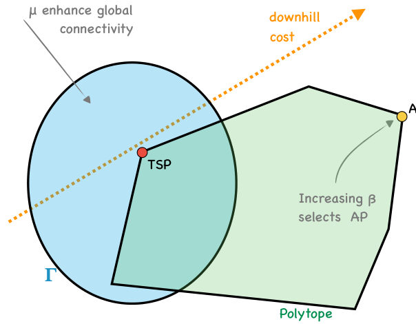
<figcaption class="paper-figure-caption"><b>Fig 1.</b> Figure 1: Schematic representation of the space of graphs considered in the probabilistic formulation. The assignment polytope represents the region in which the local degree constraints are satisfied. Within this region, the assignment-problem solution, denoted by AP, is selected by increasing the inverse temperature β when only local constraints and edge costs are considered. The TSP solution, denoted by TSP, belongs to a region that is an intersection between the AP polytope and the Γ region. Indeed Γ is defined as a region that, when the degree constraints in Eq.1 are satisfied, contains only hamiltonian cycles. Varying µ reinforces the probability of this globally region. The figure is...</figcaption>
</figure>
<figure class="paper-figure-card">
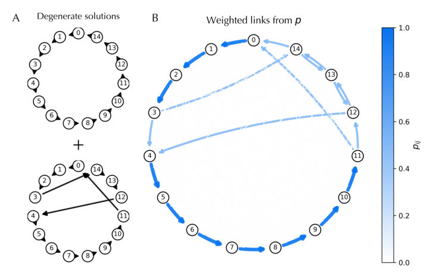
<figcaption class="paper-figure-caption"><b>Fig 2.</b> Figure 2: (A) Two equal-cost Hamiltonian cycles used to construct the degenerate cost matrix, displayed on a circular vertex layout ordered according to the first cycle. (B) Corresponding mean- field matrix pij on the same layout; link color scale and thickness indicate edge probability.</figcaption>
</figure>
<figure class="paper-figure-card">
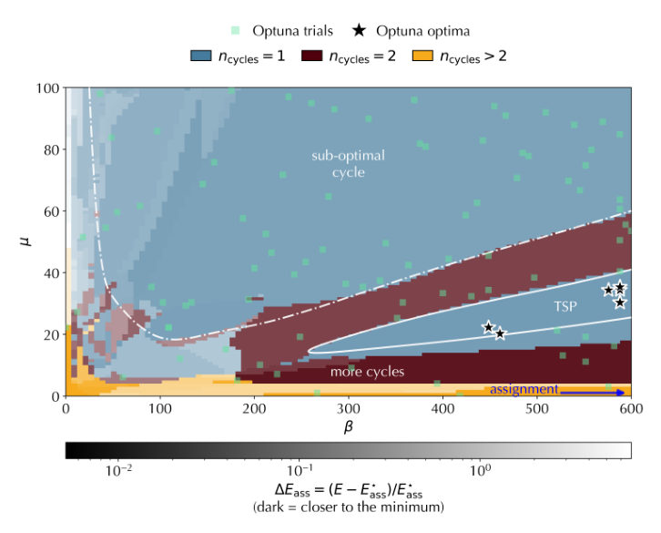
<figcaption class="paper-figure-caption"><b>Fig 3.</b> Figure 3: Diagram of the solutions obtained for a fixed cost matrix c as a function of µ and β. Colors indicate the number of cycles in the extracted solution, and their intensity represents the relative energy gap with respect to the assignment-problem minimum. The solid white line marks the parameter region where the TSP solution is recovered, while the dashed line indicates sub-optimal connected solutions. Green dots show the points sampled by Optuna, and stars mark successful trials in which the correct TSP solution is found.</figcaption>
</figure>
</div>

<p><strong>Summary.</strong> This paper reformulates the Traveling Salesman Problem using an information-theoretic maximum-entropy framework. It overcomes the challenge of enforcing global cycle constraints by introducing a global penalty term that 'tilts' the probability distribution. The resulting mean-field algorithm provides a computationally tractable method that yields near-optimal solutions for the TSP.</p>
<p><strong>Why it may be interesting.</strong> While the problem is classical optimization, the methodology—reducing a hard combinatorial problem by coupling local statistical ensembles with global constraints via an effective field—is highly relevant to modeling complex many-body systems with hard constraints (e.g., lattice gauge theories or constrained quantum states).</p>
<details>
<summary>Detailed structure</summary>
<p><strong>Main problem.</strong> The paper addresses the difficulty of formulating the Traveling Salesman Problem (TSP) within a probabilistic, information-theoretic framework due to the coexistence of local and hard global constraints.</p>
<p><strong>Main result.</strong> The authors propose a method that successfully incorporates the global Hamiltonian cycle constraint by tilting a maximum-entropy ensemble, leading to an algorithm that converges to near-optimal tours in polynomial time.</p>
<p><strong>Method.</strong> They employ the maximum-entropy principle on the probability distribution over graphs, deriving a mean-field approximation that couples local assignment constraints with a global cycle penalty term.</p>
<p><strong>Model / system.</strong> The model is the TSP, viewed as finding the minimum-cost Hamiltonian cycle on a set of cities. The mathematical framework involves defining a probability distribution $P(G)$ over graphs $G$ using Lagrangian multipliers.</p>
<p><strong>Key observables.</strong> The probability matrix $P_{ij}$ (edge occupancy), the global connectivity penalty $N_{	ext{conn}}(G)$, and the resulting candidate tour cost.</p>
<p><strong>Important parameters / regimes.</strong> The parameters $eta$ (controlling energetic cost) and $\mu$ (controlling the global connectivity penalty) are crucial for tuning the solution regime.</p>
<p><strong>Assumptions / limitations.</strong> The derivation relies on a mean-field approximation, which neglects loop-induced correlations, simplifying the intractable global constraint into a manageable effective field.</p>
<p><strong>Figures summary.</strong> Figure 1 schematically shows the transition from the assignment polytope (local constraints) to the Hamiltonian cycle region ($\Gamma$) by varying the penalty parameter $\mu$. Figure 3 illustrates the solution space in the $(eta, \mu)$ plane.</p>
<p><strong>Paper structure.</strong> The paper first establishes the information-theoretic formulation using maximum entropy. It then derives the mean-field approximation, which reduces the problem to solving self-consistent equations for edge occupancies. Finally, it details the numerical procedure for finding the tour and compares its performance against state-of-the-art heuristics.</p>
</details>
<details>
<summary>Abstract</summary>
<p>The Traveling Salesman Problem (TSP) asks for the shortest route to visit a set of cities exactly once. It combines a simple local rule - each city must be visited once - with a hard, global constraint- all cities must be traversed within a single cycle. We cast the problem within a probabilistic, information-theoretic framework. The coexistence of local and global constraints is precisely what makes the problem difficult to address in this framework: the local rule can be enforced through vertex-level constraints, whereas the global constraint cannot be captured by independent edge probabilities. We show that this obstacle can be overcome by defining a maximum-entropy probability distribution over graphs, in which edge costs and degree constraints generate an assignment-like ensemble, and a global term, describing the hard constraint, tilts this ensemble toward Hamiltonian cycles. To make the construction tractable, we derive a mean-field approximation in terms of edge occupancies and implement a differentiable cycle penalty that suppresses sub-tours. This leads to a self-consistent numerical procedure whose output is not only a candidate tour but also a probability matrix encoding competing edges and degenerate solutions. We test the method on synthetic ensembles and on TSPLIB instances. The algorithm converges to connected tours in polynomial time, matching the best-known solution in the majority of instances and remaining within a small relative gap otherwise. Beyond its competitive performance, the proposed framework offers a general approach for handling hard constraints while reducing hard combinatorial optimization problems to simpler ones.</p>
</details>
<p><sub><a href="#top">↑ back to top</a></sub></p>

<p><a id="paper-2608.26972"></a></p>
<h3 id="quantum-enhanced-ghost-imaging-recognition-via-joint-optimization-of-speckle-patterns-and-quantum-network-parameters"><a href="http://arxiv.org/abs/2608.26972v1">Quantum-enhanced ghost imaging recognition via joint optimization of speckle patterns and quantum network parameters</a></h3>
<p><strong>Authors:</strong> Yirui Mao, Xiangyu Ge, Yuhang Tu, Anqi Zhang, Le Wang, Shengmei Zhao<br>
<strong>Type:</strong> both · <strong>Category:</strong> quantum information and computing · <strong>PDF:</strong> <a href="https://arxiv.org/pdf/2608.26972v1">https://arxiv.org/pdf/2608.26972v1</a><br>
<strong>Analysis basis:</strong> full PDF text, analyzed in chunks
<strong>Topic relevance:</strong> <code>interference shaping light</code> <strong>2/5</strong> · <code>quantum optics experiment</code> <strong>2/5</strong> · <code>QC/QI experiment</code> <strong>1/5</strong> · <code>quantum measurements</code> <strong>1/5</strong></p>
<div class="figure-strip-hint">↔ Scroll figures horizontally</div>
<div class="paper-figures-scroll">
<figure class="paper-figure-card">
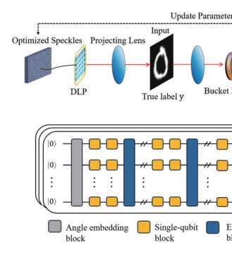
<figcaption class="paper-figure-caption"><b>Fig 1.</b> FIG. 1. Schematic diagram of the proposed ghost recognition method.</figcaption>
</figure>
<figure class="paper-figure-card">
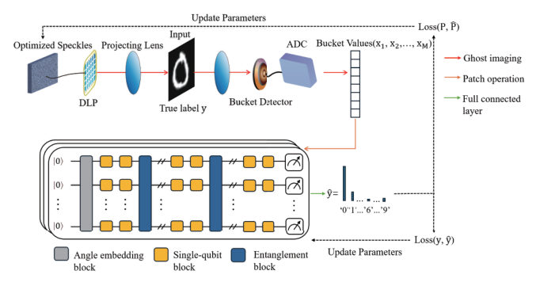
<figcaption class="paper-figure-caption"><b>Fig 2.</b> Fig. 1 illustrates the proposed ghost recognition method. Speckles are modeled as train-</figcaption>
</figure>
<figure class="paper-figure-card">
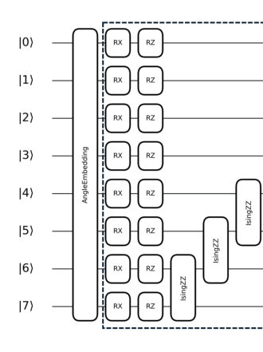
<figcaption class="paper-figure-caption"><b>Fig 3.</b> FIG. 2. Detailed architecture of the parameterized quantum circuit.</figcaption>
</figure>
<figure class="paper-figure-card">
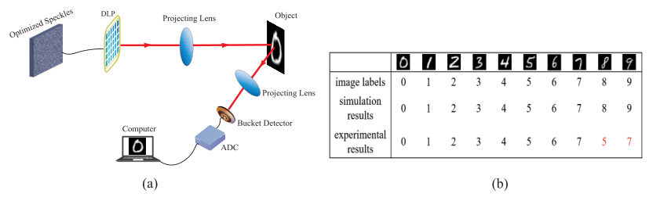
<figcaption class="paper-figure-caption"><b>Fig 4.</b> FIG. 3. Recognition results of different digits. (a) Experimental setup; (b) Simulated and experi-</figcaption>
</figure>
<figure class="paper-figure-card">
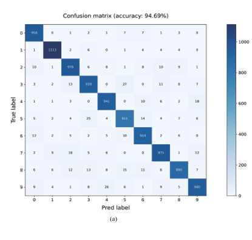
<figcaption class="paper-figure-caption"><b>Fig 5.</b> FIG. 4. Confusion matrices for the test set. (a) Simulation; (b) Experiment.</figcaption>
</figure>
</div>

<p><strong>Summary.</strong> This paper proposes a novel framework for ghost imaging recognition that jointly optimizes the physical speckle patterns and the parameters of a quantum circuit. By integrating a speckle consistency regularization term, the method overcomes the limitations of traditional quantum machine learning approaches at low sampling rates. The results show significant accuracy improvements over classical and existing quantum methods, validating its potential for practical quantum-enhanced imaging.</p>
<p><strong>Why it may be interesting.</strong> It directly applies quantum computing concepts (variational circuits, entanglement structures) to a quantum optics imaging problem, demonstrating a practical pathway for quantum enhancement in measurement science.</p>
<details>
<summary>Detailed structure</summary>
<p><strong>Main problem.</strong> The core challenge is achieving high-fidelity image recognition using ghost imaging, particularly when data sampling rates are extremely low.</p>
<p><strong>Main result.</strong> The proposed joint optimization framework significantly improves recognition accuracy (e.g., 90.1% on MNIST at 1.5625% sampling) compared to classical or traditional quantum machine learning baselines.</p>
<p><strong>Method.</strong> The method jointly optimizes the classical speckle patterns (optical coding) and the parameters of a parameterized quantum circuit (quantum feature extraction) via a regularization mechanism.</p>
<p><strong>Model / system.</strong> The system uses Ghost Imaging (GI) combined with a hardware-efficient variational quantum circuit. The quantum circuit employs a star-shaped entanglement structure and processes input bucket signals encoded via an angle embedding.</p>
<p><strong>Key observables.</strong> Recognition accuracy on MNIST and Fashion-MNIST datasets, and the average accuracy measured on a real optical GI system.</p>
<p><strong>Important parameters / regimes.</strong> Ultra-low sampling rates (e.g., 1.5625%), quantum circuit parameters (Theta), and the regularization strength ($\lambda$).</p>
<p><strong>Assumptions / limitations.</strong> The primary assumption is that jointly optimizing the physical speckle patterns and the quantum circuit parameters provides a robust solution superior to fixing one component.</p>
<p><strong>Figures summary.</strong> Figures illustrate the schematic of the proposed method, the detailed architecture of the parameterized quantum circuit, and comparison tables/plots showing accuracy improvements over baselines.</p>
<p><strong>Paper structure.</strong> The paper introduces the problem, details the joint optimization methodology involving speckle regularization and quantum circuit design, presents simulation results comparing performance across varying sampling rates, and concludes with validation on a real optical system.</p>
</details>
<details>
<summary>Abstract</summary>
<p>Ghost imaging enables nonlocal image reconstruction and exhibits strong robustness against interference, but achieving high-fidelity recognition at ultra-low sampling rates remains challenging. Quantum machine learning offers a novel approach for efficient feature extraction on noisy medium-scale quantum devices; however, existing methods generally suffer from low recognition accuracy and weak noise resistance. This paper proposes a ghost imaging recognition method based on the simultaneous optimization of speckle patterns and quantum network parameters. By leveraging the mathematical equivalence between classical convolution and speckle-object dot product operations in ghost imaging, a speckle consistency regularization mechanism is introduced to achieve end-to-end joint optimization of optical coding and quantum feature extractors. A parallel 8-qubit quantum circuit employing block coding and a star-shaped entanglement structure is designed to extract higher-order features from bucket signals. Simulation results on the MNIST and Fashion-MNIST datasets show that at an ultra-low sampling rate of 1.5625%, the proposed framework achieves recognition accuracies of 90.1% and 81.7%, respectively, representing a 2.6% improvement over classical convolutional neural networks and a maximum improvement of 14.2% over traditional hybrid quantum machine learning models. This method also exhibits strong robustness to quantum noise and has been validated on a real optical ghost imaging system, achieving an average recognition accuracy of 84.8%. These results confirm that the joint optimization of speckle patterns and quantum network parameters provides a reliable and practical solution for low-sampling ghost imaging recognition.</p>
</details>
<p><sub><a href="#top">↑ back to top</a></sub></p>

<p><a id="paper-2608.26279"></a></p>
<h3 id="critical-properties-and-glass-transitions-in-randomly-coupled-fields"><a href="http://arxiv.org/abs/2608.26279v1">Critical Properties and Glass Transitions in Randomly Coupled Fields</a></h3>
<p><strong>Authors:</strong> Amer Al-Hiyasat<br>
<strong>Type:</strong> theory · <strong>Category:</strong> disordered systems and neural networks · <strong>PDF:</strong> <a href="https://arxiv.org/pdf/2608.26279v1">https://arxiv.org/pdf/2608.26279v1</a><br>
<strong>Analysis basis:</strong> full PDF text, analyzed in chunks
<strong>Topic relevance:</strong> <code>Keldysh / 2PI / non-Gaussian methods</code> <strong>2/5</strong> · <code>analog quantum simulation</code> <strong>2/5</strong></p>
<div class="figure-strip-hint">↔ Scroll figures horizontally</div>
<div class="paper-figures-scroll">
<figure class="paper-figure-card">
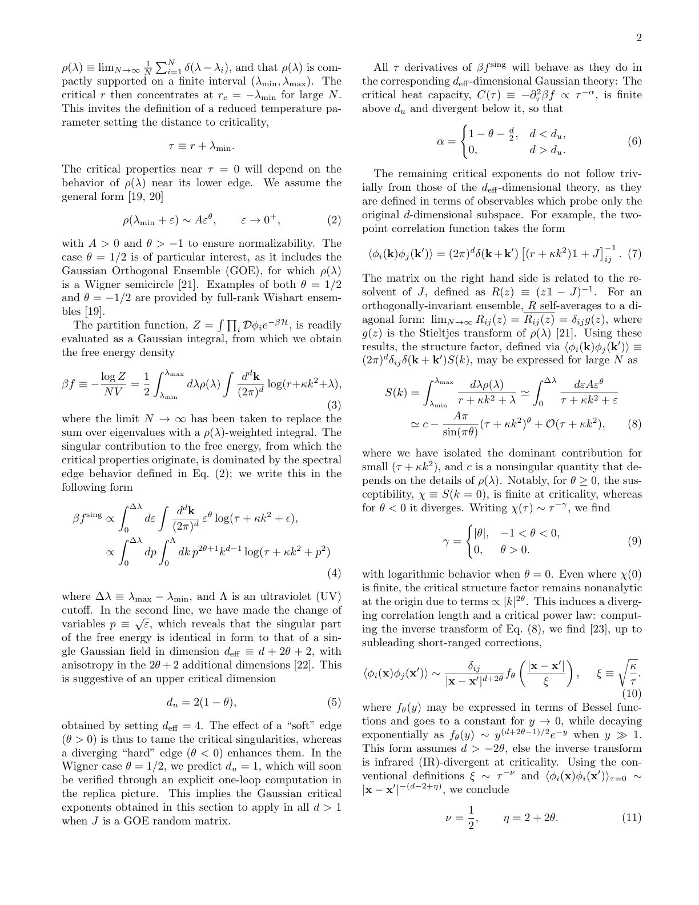
<figcaption class="paper-figure-caption"><b>Fig 1.</b> Low-resolution page preview, page 2</figcaption>
</figure>
<figure class="paper-figure-card">
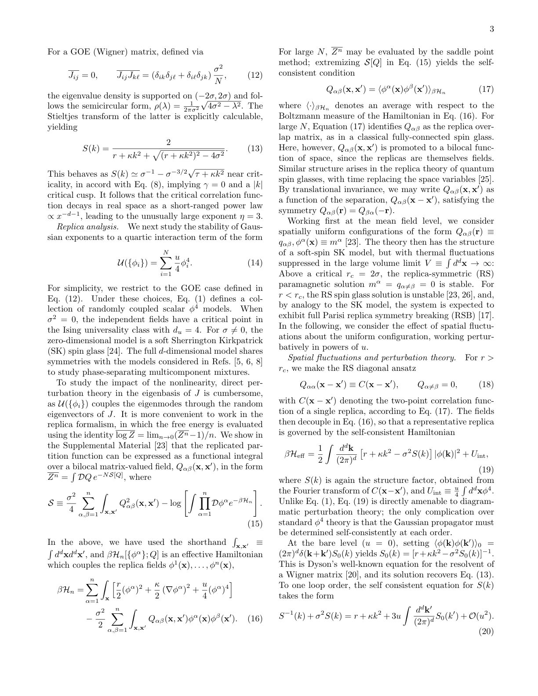
<figcaption class="paper-figure-caption"><b>Fig 2.</b> Low-resolution page preview, page 3</figcaption>
</figure>
<figure class="paper-figure-card">
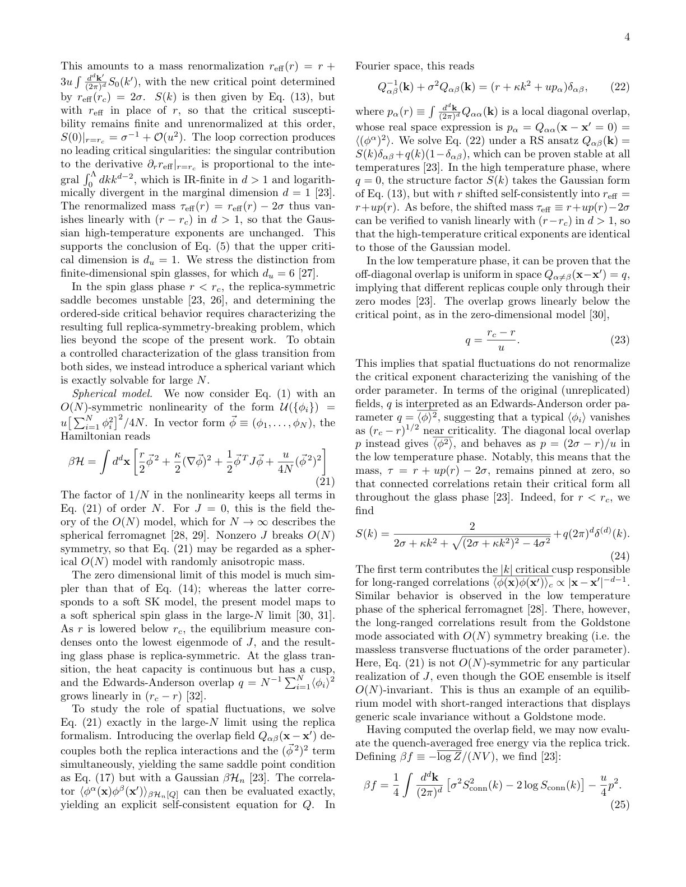
<figcaption class="paper-figure-caption"><b>Fig 3.</b> Low-resolution page preview, page 4</figcaption>
</figure>
<figure class="paper-figure-card">
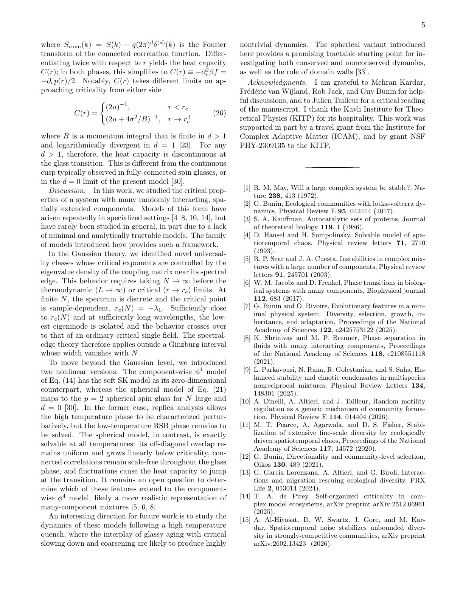
<figcaption class="paper-figure-caption"><b>Fig 4.</b> Low-resolution page preview, page 5</figcaption>
</figure>
<figure class="paper-figure-card">
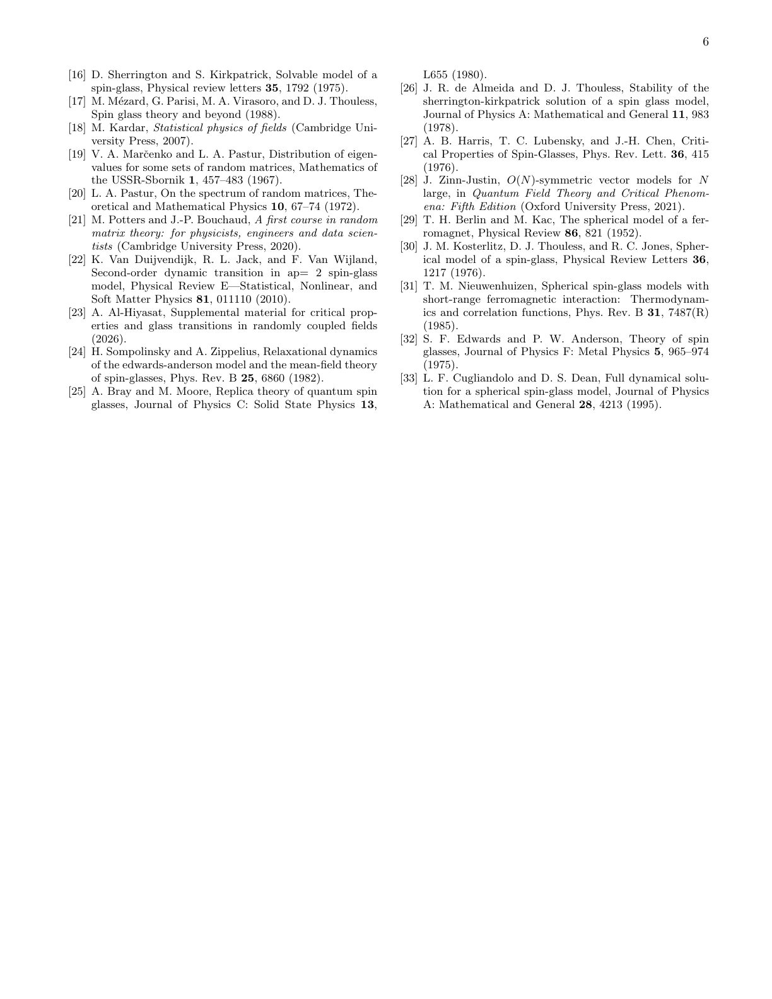
<figcaption class="paper-figure-caption"><b>Fig 5.</b> Low-resolution page preview, page 6</figcaption>
</figure>
</div>

<p><strong>Summary.</strong> This work investigates the critical phenomena in systems of randomly coupled, extended scalar fields, treating the system as a generalization of a spin glass. Using replica theory and large-N limits, the authors derive scaling laws and determine the upper critical dimension for the transition. The results provide deep insights into how disorder governs phase transitions in extended quantum or classical field theories.</p>
<p><strong>Why it may be interesting.</strong> The techniques used—replica methods and analyzing critical exponents in random media—are foundational to understanding complex many-body systems, which share mathematical parallels with quantum many-body physics.</p>
<details>
<summary>Detailed structure</summary>
<p><strong>Main problem.</strong> The paper characterizes the critical behavior and universality classes of systems composed of a large number of spatially extended, randomly coupled scalar fields.</p>
<p><strong>Main result.</strong> The analysis determines an upper critical dimension ($d_u$) for the system, finding $d_u=1$ for the Wigner case, and shows that the heat capacity exhibits a discontinuity at the critical point for $d>1$.</p>
<p><strong>Method.</strong> The study employs the replica formalism combined with the saddle point method to evaluate the quenched-averaged free energy and analyze the stability of the replica-symmetric solution.</p>
<p><strong>Model / system.</strong> The model consists of $N$ scalar fields coupled by a quenched random interaction, analogous to a spin glass where spins are promoted to fields. A specific, exactly solvable variant is the Spherical Model.</p>
<p><strong>Key observables.</strong> Free energy density ($eta f$), critical heat capacity ($C(	au)$), structure factor ($S(k)$), and the two-point correlation function.</p>
<p><strong>Important parameters / regimes.</strong> Large number of fields ($N 	o \infty$), system size ($L 	o \infty$), and the reduced temperature parameter ($   au$).</p>
<p><strong>Assumptions / limitations.</strong> The analysis relies heavily on the large-$N$ limit and the saddle point approximation applied to the replicated partition function.</p>
<p><strong>Paper structure.</strong> The paper progresses by first establishing the general Gaussian theory, then analyzing the nonlinear case using the replica formalism, and finally examining the stability of the saddle point solution via the Hessian matrix.</p>
</details>
<details>
<summary>Abstract</summary>
<p>We study an assembly of $N$ scalar fields coupled via a quenched random interaction, equivalent to a spin glass whose spins are promoted to $d$-dimensional fields. When $N$ is large, the random coupling matrix produces a family of Gaussian universality classes whose critical exponents are determined by the behavior of the eigenvalue density near the spectral edge. For a Wigner matrix, the correlation length diverges at criticality but the susceptibility remains finite, and one-loop replica analysis supports an upper critical dimension of unity. In an exactly solvable spherical variant, the heat capacity jumps at the transition in $d>1$, and correlations remain pinned to their critical form throughout the glass phase, giving generic scale invariance despite the absence of a Goldstone mode.</p>
</details>
<p><sub><a href="#top">↑ back to top</a></sub></p>

<p><a id="paper-2608.27453"></a></p>
<h3 id="metallogenic-quantum-criticality-fermi-surface-nucleation-at-transitions-between-gapped-phases"><a href="http://arxiv.org/abs/2608.27453v1">Metallogenic quantum criticality: Fermi surface nucleation at transitions between gapped phases</a></h3>
<p><strong>Authors:</strong> Zhengyan Darius Shi<br>
<strong>Type:</strong> theory · <strong>Category:</strong> strongly correlated electrons · <strong>PDF:</strong> <a href="https://arxiv.org/pdf/2608.27453v1">https://arxiv.org/pdf/2608.27453v1</a><br>
<strong>Analysis basis:</strong> full PDF text, analyzed in chunks
<strong>Topic relevance:</strong> <code>Keldysh / 2PI / non-Gaussian methods</code> <strong>2/5</strong> · <code>analog quantum simulation</code> <strong>1/5</strong></p>
<div class="figure-strip-hint">↔ Scroll figures horizontally</div>
<div class="paper-figures-scroll">
<figure class="paper-figure-card">
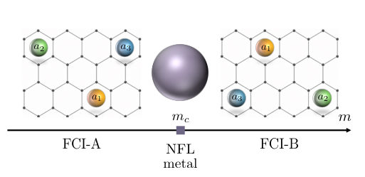
<figcaption class="paper-figure-caption"><b>Fig 1.</b> FIG. 1. Schematic phase diagram in which a critical non- Fermi liquid (NFL) metal with a gapless Fermi surface emerges at the phase transition between two fully gapped frac- tional Chern insulators (FCIs) with Abelian anyons ai.</figcaption>
</figure>
<figure class="paper-figure-card">
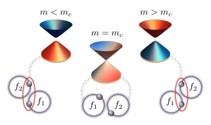
<figcaption class="paper-figure-caption"><b>Fig 2.</b> FIG. 2. Physical mechanism for a metallogenic quantum crit- ical point. In the vicinity of the critical point, the system decomposes into a QED3 (2+1D quantum electrodynamics) sector and two Fermi surfaces f1, f2 coupled to the same set of emergent U(1) gauge fields. For either sign of the Dirac mass in QED3, gauge fluctuations induce a pairing instability between f1 and f2, leading to fully gapped phases. Precisely at criticality, gapless Dirac fermions modify the gauge field dynamics and stabilize the Fermi surfaces.</figcaption>
</figure>
<figure class="paper-figure-card">
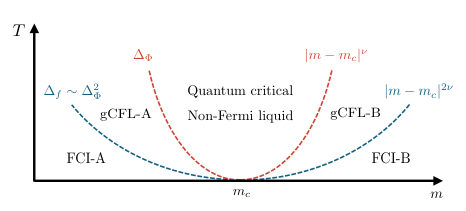
<figcaption class="paper-figure-caption"><b>Fig 3.</b> FIG. 3. Finite temperature crossover near the MGQCP. An ϵ- expansion estimate of the correlation length exponent ν ≈1.5 explains the shape of the crossover curves. The critical NFL and the gCFLs all have gapless Fermi surfaces. One crucial difference is that the electron is gapped in the gCFLs but gapless and strongly damped in the critical NFL.</figcaption>
</figure>
</div>

<p><strong>Summary.</strong> This theoretical work introduces Metallogenic Quantum Critical Points (MGQCPs), where a Fermi surface unexpectedly emerges at a quantum phase transition between two gapped insulating states. By constructing effective field theories for these transitions, the authors show that the critical point exhibits non-Fermi liquid behavior, challenging established paradigms of quantum criticality.</p>
<p><strong>Why it may be interesting.</strong> The concept of MGQCPs provides a powerful, non-standard framework for understanding critical points in strongly correlated electron systems, particularly those involving topological insulators and moire heterostructures.</p>
<details>
<summary>Detailed structure</summary>
<p><strong>Main problem.</strong> The paper investigates a radical failure of standard quantum critical point theory, where an entire gapless Fermi surface can emerge at a quantum critical point separating two fully gapped insulating phases.</p>
<p><strong>Main result.</strong> These exotic transitions, called Metallogenic Quantum Critical Points (MGQCPs), are characterized by a critical Fermi surface and exhibit non-Fermi liquid spectral function signatures, despite the neighboring phases being gapped.</p>
<p><strong>Method.</strong> The authors construct controlled effective field theories by combining analyses of fermionic composite fermion fluctuations with critical bosonic field theories (like QED3) using parton constructions and mean-field theory.</p>
<p><strong>Model / system.</strong> The minimal model is a quantum Hall bilayer system transitioning between two distinct Fractional Chern Insulators (FCIs). The physics is described by coupling fermionic partons to background gauge fields arising from the bosonic transition.</p>
<p><strong>Key observables.</strong> Fermi surface existence, spectral function non-analyticity, resistivity scaling laws, and topological invariants (Hall conductivities, central charges).</p>
<p><strong>Important parameters / regimes.</strong> Filling fractions ($
u_i$), background flux ($B$), and the nature of the Coulomb interaction (screened vs. unscreened).</p>
<p><strong>Assumptions / limitations.</strong> The analysis relies on mean-field approximations for the bosonic phases and the use of parton constructions to decouple the low-energy physics.</p>
<p><strong>Figures summary.</strong> Figures schematically illustrate the phase diagram showing the emergence of an NFL metal at the FCI transition, and diagrams detail the underlying QED3 sector and the role of gauge fluctuations.</p>
<p><strong>Paper structure.</strong> The paper proceeds by establishing the general principle, constructing the effective Lagrangian by coupling fermionic and bosonic sectors, analyzing the stability of pairing instabilities via RG flow, and finally confirming the MGQCP nature through specific FCI transitions.</p>
</details>
<details>
<summary>Abstract</summary>
<p>Continuous quantum phase transitions in interacting many-body systems exhibit universal phenomena that are largely independent of microscopic details. An organizing principle distilled from canonical examples such as the magnetic transition in Ising models is that the low-energy physics of transitions between gapped phases is governed by scale-invariant quantum field theories with gapless degrees of freedom at isolated points in momentum space. In this paper, we show that this principle can fail in a radical way: an entire gapless Fermi surface can emerge at a quantum critical point separating two fully gapped insulators. These exotic phase transitions are dubbed \textit{metallogenic quantum critical points} (MGQCP). We construct a controlled family of effective field theories for MGQCPs between distinct fractional Chern insulators and propose a periodically modulated quantum Hall bilayer as a minimal microscopic setting. The critical theory exhibits an unusual mixture of physical signatures: while transport and compressibility follow scaling laws compatible with a conformal field theory, the electron spectral function develops a power-law non-analyticity at the Fermi momentum, characteristic of non-Fermi-liquid metals. We discuss how the concept of MGQCP may shed new light on critical phenomena in moire materials with tunable Chern bands. More generally, our results point to a broader class of quantum critical phenomena in which extended manifolds of gapless excitations emerge in momentum space despite being absent in both neighboring phases.</p>
</details>
<p><sub><a href="#top">↑ back to top</a></sub></p>

<p><a id="paper-2608.26630"></a></p>
<h3 id="quantum-enhanced-single-and-multiparameter-metrology-in-qutrit-ensembles-by-generalized-twisting-dynamics"><a href="http://arxiv.org/abs/2608.26630v1">Quantum-enhanced single and multiparameter metrology in qutrit ensembles by generalized twisting dynamics</a></h3>
<p><strong>Authors:</strong> Deep Datta, Sayam Chakraborty, John Drew Wilson, Vaibhav Madhok, Athreya Shankar<br>
<strong>Type:</strong> theory · <strong>Category:</strong> other · <strong>PDF:</strong> <a href="https://arxiv.org/pdf/2608.26630v1">https://arxiv.org/pdf/2608.26630v1</a><br>
<strong>Analysis basis:</strong> full PDF text, analyzed in chunks
<strong>Topic relevance:</strong> <code>quantum measurements</code> <strong>2/5</strong> · <code>analog quantum simulation</code> <strong>1/5</strong></p>
<div class="figure-strip-hint">↔ Scroll figures horizontally</div>
<div class="paper-figures-scroll">
<figure class="paper-figure-card">
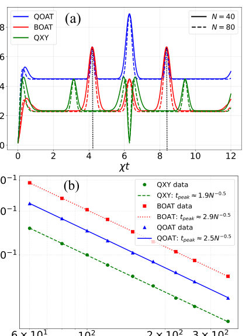
<figcaption class="paper-figure-caption"><b>Fig 1.</b> FIG. 1. (a) Long time evolution of µmax for QOAT (blue), BOAT (red), and QXY (green) model, solid lines and dashed lines correspond to N = 40 and N = 80 respectively. At χt = 4π</figcaption>
</figure>
<figure class="paper-figure-card">
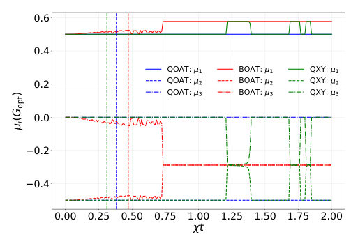
<figcaption class="paper-figure-caption"><b>Fig 2.</b> FIG. 3. The eigenvalues of the optimal generator for QOAT (Blue), BOAT(Red) and QXY(Green) models have been shown for short time duration. The vertical dashed lines mark the tpeak for the respective models. At tpeak for the QOAT and QXY model, the eigen spectrum is strictly 1 2{1, −1, 0}. Whereas for the BOAT model, the spectrum is close to 1 2{1, −1, 0}.</figcaption>
</figure>
<figure class="paper-figure-card">
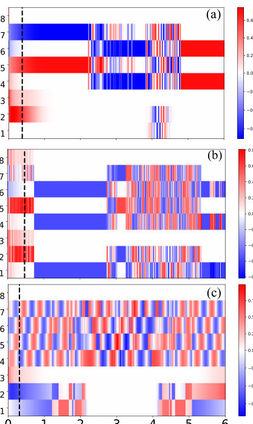
<figcaption class="paper-figure-caption"><b>Fig 3.</b> FIG. 2. Contribution of the Gell-Mann operators in the opti- mal generator Gopt for (a) QOAT (N = 40), (b)BOAT(N = 40) and (c) QXY (N = 40). The vertical black dashed lines indicate the tpeak for each model. At tpeak, for the QOAT and QXY models, the optimal generator has no contribution from λ8. However, there is very little contribution from λ8 for the BOAT model.</figcaption>
</figure>
<figure class="paper-figure-card">
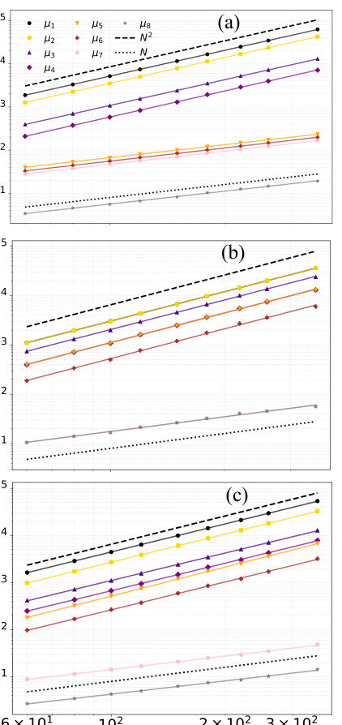
<figcaption class="paper-figure-caption"><b>Fig 4.</b> FIG. 4. Scaling of eigenvalues of Σ matrix at tpeak with system size N for (a)QOAT, (b) BOAT and (c) QXY models. The solid lines are linear fits, and the markers are the plot points. The slope of the fit lines gives the exponent of N. QOAT has a 4 orthogonal generators for which sensitivity scales approx- imately as Heisenberg scaling (∝N 2), whereas BOAT and QXY have 6 such generators. The N 2 and N scaling lines are shown as dashed and dotted black lines, respectively, in each plot.</figcaption>
</figure>
<figure class="paper-figure-card">
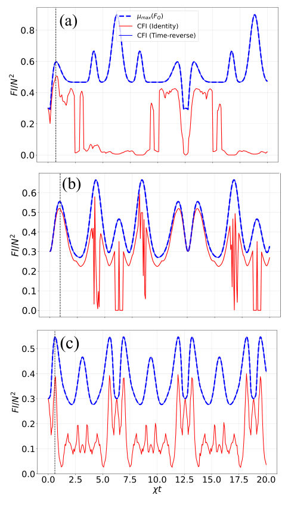
<figcaption class="paper-figure-caption"><b>Fig 5.</b> FIG. 5. Comparison of the classical Fisher information (CFI) obtained using the time-reversal (solid blue line) and identity (solid red line) protocols with the maximum quantum Fisher information, µmax(FQ) (blue dashed), for N = 10. Results are shown for (a) the QOAT model, (b) the BOAT model, and (c) the QXY model. The vertical black dashed line marks the tpeak for each model. The CFI obtained under the time- reversal protocol saturates the optimal QFI for all models, whereas under the identity protocol it does not. The same measurement basis also saturates the QFI corresponding to any other encoding direction.</figcaption>
</figure>
</div>

<p><strong>Summary.</strong> This paper explores quantum sensing using three novel qutrit models derived from the OAT Hamiltonian. By analyzing the Quantum Fisher Information, the authors show these systems achieve near-Heisenberg scaling and, crucially, enable simultaneous, compatible estimation of multiple parameters—a feat difficult in qubit systems. This advances the field by demonstrating robust, high-precision sensing in multi-level atomic ensembles.</p>
<p><strong>Why it may be interesting.</strong> This work extends quantum sensing theory to multi-level systems (qutrits), providing concrete, experimentally feasible models that surpass the limitations of qubit-only approaches, particularly regarding multiparameter estimation compatibility.</p>
<details>
<summary>Detailed structure</summary>
<p><strong>Main problem.</strong> Investigating quantum-enhanced single and multiparameter metrology using qutrit ensembles, moving beyond standard qubit protocols.</p>
<p><strong>Main result.</strong> The proposed qutrit models achieve near-Heisenberg scaling for sensing and demonstrate a novel mechanism for compatible multiparameter estimation using commuting generators from the su(3) algebra.</p>
<p><strong>Method.</strong> The metrological utility is characterized using the Quantum Fisher Information (QFI) toolbox, analyzing the scaling of the QFIM and the Uhlmann curvature.</p>
<p><strong>Model / system.</strong> The system involves N three-level atoms (qutrits) whose dynamics are governed by generalizations of the One-Axis Twisting (OAT) model, specifically QOAT, BOAT, and QXY Hamiltonians, operating within the su(3) algebra.</p>
<p><strong>Key observables.</strong> Quantum Fisher Information (QFI), Mean Squared Error (MSE), Uhlmann Curvature, and the scaling of incompatibility measures (R).</p>
<p><strong>Important parameters / regimes.</strong> System size (N), evolution time ($t$), and the operating point of the sensor.</p>
<p><strong>Assumptions / limitations.</strong> The study addresses practical issues like local dissipation and estimation ambiguity by optimizing the sensor operating point.</p>
<p><strong>Figures summary.</strong> Figure 9 illustrates the time evolution of eigenvalues and the Frobenius norm of the commutator for two generators in the BOAT model, showing compatibility.</p>
<p><strong>Paper structure.</strong> The paper reviews metrology concepts, introduces and analyzes the three qutrit extensions (QOAT, BOAT, QXY) using QFI, discusses experimental protocols, and finally addresses practical limitations like dissipation and compatibility.</p>
</details>
<details>
<summary>Abstract</summary>
<p>Quantum-enhanced sensing with atomic ensembles has predominantly focused on qubit-based protocols, despite the growing ability of many experimental platforms to coherently control and entangle multi-level systems. Here, we investigate quantum-enhanced sensing with qutrit ensembles by introducing three experimentally feasible qutrit generalisations of the one-axis twisting (OAT) model that involve entangling operations only between two levels, while the third level primarily acts as a spectator. We characterize the metrological utility of the dynamically generated states using the quantum Fisher information toolbox. We find numerically that all three models offer considerable freedom in encoding direction for quantum-enhanced sensing, with up to 6 out of 8 possible directions exhibit near-Heisenberg scaling after a short evolution time. We discuss experimental access to this enhanced metrological precision via effective time-reversal protocols. Furthermore, we examine the practical issues of estimation ambiguity and local dissipation, and show that they can be largely overcome by optimizing the sensor operating point. Finally, we show that the measurement incompatibility in estimating multiple parameters simultaneously encoded in different directions with near-Heisenberg scaling of precision is suppressed at the zero operating point as the system size increases. In the process, we find that one of the models enables near-Heisenberg scaling metrology with a pair of commuting generators, a possibility that arises from the $su(3)$ algebra and is thus absent in qubit-ensemble based sensors of collective $SU(2)$ rotations.</p>
</details>
<p><sub><a href="#top">↑ back to top</a></sub></p>

<p><a id="paper-2608.26556"></a></p>
<h3 id="dynamical-phase-selection-controls-compute-scaling-in-looped-transformers"><a href="http://arxiv.org/abs/2608.26556v1">Dynamical phase selection controls compute scaling in looped transformers</a></h3>
<p><strong>Authors:</strong> Gunn Kim<br>
<strong>Type:</strong> theory · <strong>Category:</strong> disordered systems and neural networks · <strong>PDF:</strong> <a href="https://arxiv.org/pdf/2608.26556v1">https://arxiv.org/pdf/2608.26556v1</a><br>
<strong>Analysis basis:</strong> full PDF text, analyzed in chunks
<strong>Topic relevance:</strong> <code>non-equilibrium universality</code> <strong>2/5</strong></p>
<div class="figure-strip-hint">↔ Scroll figures horizontally</div>
<div class="paper-figures-scroll">
<figure class="paper-figure-card">
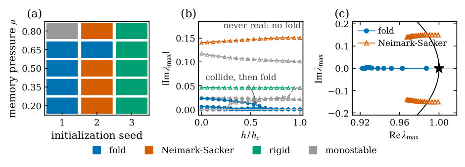
<figcaption class="paper-figure-caption"><b>Fig 1.</b> FIG. 1. (a) Phase across memory pressure and initialization, fifteen networks. (b) |Im λmax| along the branch, with the symmetry mode removed; fold networks are solid. (c) λmax in the complex plane for one fold and one Neimark–Sacker network.</figcaption>
</figure>
<figure class="paper-figure-card">
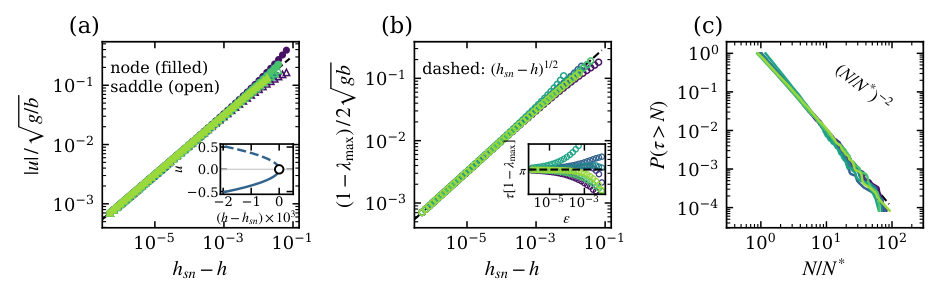
<figcaption class="paper-figure-caption"><b>Fig 2.</b> FIG. 2. Seven fold-phase networks, each rescaled by its predicted amplitude; dashed lines carry no free parameter. (a) Node (filled) and saddle (open) branches; inset, sign retained. (b) Critical slowing down; inset, Π(ε) of Eq. (5). (c) Complementary cumulative distributions of τ.</figcaption>
</figure>
<figure class="paper-figure-card">
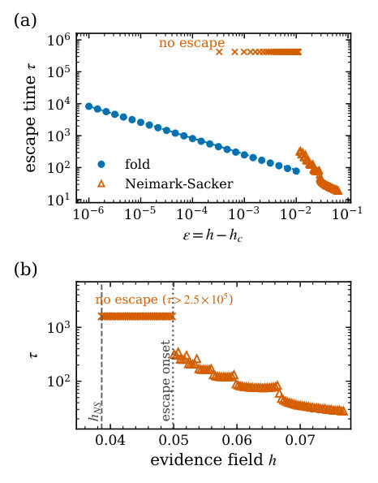
<figcaption class="paper-figure-caption"><b>Fig 3.</b> FIG. 3. (a) Escape time against distance to the critical field for a fold network (blue; dashed, Eq. (4)) and a Neimark– Sacker network (orange); crosses mark fields with no escape within 2.5 × 105 iterations. (b) The Neimark–Sacker scan on a linear field axis. The non-escaping fields form a contiguous low-field interval and escape begins at a single onset near h = 0.0499, well above the crossing hNS = 0.0386: loss of fixed-point stability and escape are distinct events.</figcaption>
</figure>
</div>

<p><strong>Summary.</strong> This work treats looped transformers as dynamical systems, showing that their computational cost scaling is not fixed by their design but by the specific dynamical phase selected during training. By analyzing bifurcations, the authors derive universal power-law scaling laws for certain phases, demonstrating that the underlying physics of the solution dictates its computational limits.</p>
<p><strong>Why it may be interesting.</strong> The connection between the stability analysis of a complex, high-dimensional dynamical system (the transformer) and a universal, low-dimensional critical scaling law ($N^{-2}$) provides a powerful, physics-based lens for understanding AI computation.</p>
<details>
<summary>Detailed structure</summary>
<p><strong>Main problem.</strong> The paper investigates what fundamentally governs the computational scaling of looped transformers, arguing it is determined by the network's underlying dynamical phase rather than just its architecture or training objective.</p>
<p><strong>Main result.</strong> Distinct dynamical phases (like fold vs. Neimark-Sacker) can emerge for networks with identical structure, and the specific phase dictates the universal power-law scaling of test-time compute.</p>
<p><strong>Method.</strong> The analysis uses dynamical systems theory, classifying network behavior based on bifurcations (saddle-node fold, Neimark-Sacker) of the weight-tied iterative map.</p>
<p><strong>Model / system.</strong> The model is a looped transformer performing inference by iterating a weight-tied map, $z_{t+1} = F_	heta(z_t; h)$, which is analyzed as a dynamical system.</p>
<p><strong>Key observables.</strong> The dynamical phase (fold vs. Neimark-Sacker), the relaxation time $   au(\epsilon)$, the spectral gap $\lambda_{\max}(-\epsilon)$, and the workload tail probability $P(	au > N)$.</p>
<p><strong>Important parameters / regimes.</strong> The control field $h$ (or $\epsilon$), which drives the system through bifurcations, and the initialization state of the network weights.</p>
<p><strong>Assumptions / limitations.</strong> The analysis relies on local normal-form reductions near codimension-one bifurcations (fold and Neimark-Sacker crossings).</p>
<p><strong>Figures summary.</strong> Figure 1 summarizes phase assignments across different conditions; Figure 2 shows the collapse of the cumulative distribution of relaxation times for fold-phase networks onto a universal power law; Figure 3 compares escape times for fold and Neimark-Sacker dynamics.</p>
<p><strong>Paper structure.</strong> The paper first introduces the looped transformer as a dynamical system, then analyzes the fixed-point stability and bifurcation mechanisms to classify the system into distinct phases, deriving universal scaling laws for the fold phase and showing their absence in the Neimark-Sacker phase.</p>
</details>
<details>
<summary>Abstract</summary>
<p>A looped transformer performs inference by iterating a weight-tied map, making its computation a dynamical process whose cost is set by the resulting inference dynamics. Here we show that networks with identical architecture and objective, trained to identical accuracy, nevertheless realize distinct dynamical phases depending strongly on initialization, and that the bifurcation defining each phase determines how test-time compute scales. The phases are distinguished by their bifurcation mechanisms, including a saddle-node fold and a Neimark-Sacker-type transition to bounded nonstationary motion. In the fold phase, a one-dimensional normal-form reduction predicts both the relaxation-time and spectral-gap amplitudes from local derivatives of the trained map, yielding the parameter-free relation $τ(\varepsilon)[1-λ_{\max}(-\varepsilon)]\toπ$. Composed with a regular distribution of problem difficulty, the same critical slowing down produces the workload-level tail $P(τ>N)\sim N^{-2}$. In the Neimark--Sacker phase, the fold scaling law disappears rather than merely changing its prefactor. Thus, test-time compute is not determined by architecture alone. It is governed by the dynamical phase of the solution found by training.</p>
</details>
<p><sub><a href="#top">↑ back to top</a></sub></p>

<p><a id="paper-2608.27136"></a></p>
<h3 id="optimal-gaussian-networks-for-private-distributed-quantum-sensing"><a href="http://arxiv.org/abs/2608.27136v1">Optimal Gaussian networks for private distributed quantum sensing</a></h3>
<p><strong>Authors:</strong> Hanbom Yoo, Byeongyun Yang, Hyunwoo Yoo, Seongjin Hong<br>
<strong>Type:</strong> theory · <strong>Category:</strong> quantum information and computing · <strong>PDF:</strong> <a href="https://arxiv.org/pdf/2608.27136v1">https://arxiv.org/pdf/2608.27136v1</a><br>
<strong>Analysis basis:</strong> full PDF text, analyzed in chunks
<strong>Topic relevance:</strong> <code>quantum measurements</code> <strong>2/5</strong></p>
<div class="figure-strip-hint">↔ Scroll figures horizontally</div>
<div class="paper-figures-scroll">
<figure class="paper-figure-card">
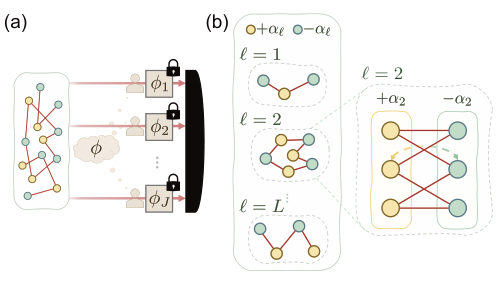
<figcaption class="paper-figure-caption"><b>Fig 1.</b> FIG. 1. Schematic of private DQS. (a) A multimode quantum probe interrogates spatially separated phase shifts {ϕj}J j=1, while the sensing network is designed such that the target parameter ϕ = PJ j=1 wjϕj is accessible and all protected in- dividual local parameters remain hidden. (b) After a suitable permutation, nodes are grouped into independent ℓ-block, each partitioned into +αℓand −αℓsectors again. The en- larged ℓ= 2 block illustrates the corresponding connectivity between the two sectors and non-connectivity within a sector.</figcaption>
</figure>
<figure class="paper-figure-card">
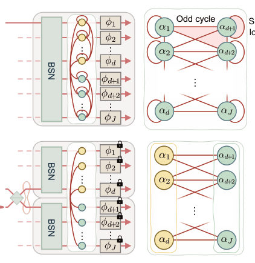
<figcaption class="paper-figure-caption"><b>Fig 2.</b> FIG. 2. Example graph structures and optical implementa- tions for a system with J sensing nodes. (a) An SMSV is dis- tributed over the sensing nodes through a beam-splitter net- work (BSN). The corresponding graph contains self-loops and odd cycles, which violate the privacy condition. (b) A TMSV is distributed over the two sensing-node sectors through sep- arate BSNs. The resulting graph contains no self-loops and connects only the two opposite sectors, forming the bipartite structure required by the privacy condition.</figcaption>
</figure>
<figure class="paper-figure-card">
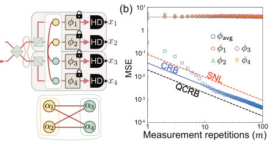
<figcaption class="paper-figure-caption"><b>Fig 3.</b> FIG. 3. (a) Schematic of the sensitivity-optimal scheme for 4-mode private DQS, where the target weight is w = (1, 1, 1, 1)/4. A TMSV is distributed through BS to local phase shifts, and each node performs local homodyne mea- surement (HD). (b) MSEs of maximum-likelihood estimates for both the target and individual local parameters, with r = 1 and (ϕ1, ϕ2, ϕ3, ϕ4) = (−2, −1, 1, 2), evaluated over 3000 independent estimations. The target MSE approaches to CRB (blue solid line) with the number of measurement repetitions, whereas the local MSEs remain near the uniform- random-guessing benchmark (dotted line). The shot-noise limit (SNL, red dashed line) is obtained using a coherent state probe...</figcaption>
</figure>
</div>

<p><strong>Summary.</strong> This work establishes a general framework for designing Gaussian quantum networks for distributed sensing that guarantees perfect local privacy. By characterizing the required structure of the quantum state using the pairing matrix, the authors derive an optimal probe state based on TMSV states. This state achieves Heisenberg scaling for the collective parameter estimate while ensuring individual local parameters remain hidden, even under realistic noise like optical loss.</p>
<p><strong>Why it may be interesting.</strong> It provides a rigorous, general framework for designing quantum sensors that are robust against information leakage, which is crucial for practical, multi-user quantum network applications.</p>
<details>
<summary>Detailed structure</summary>
<p><strong>Main problem.</strong> To characterize Gaussian quantum networks that can estimate a collective parameter in a distributed setting while ensuring that no individual local parameter can be estimated independently (perfect local privacy).</p>
<p><strong>Main result.</strong> The optimal private Gaussian probe state is constructed from Two-Mode Squeezed Vacuum (TMSV) states, achieving Heisenberg scaling in sensitivity while rigorously maintaining perfect local privacy.</p>
<p><strong>Method.</strong> The authors analytically derive necessary and sufficient conditions on the pairing matrix of the Gaussian state imposed by the local privacy constraint, leading to a structural characterization of the optimal state.</p>
<p><strong>Model / system.</strong> The system involves continuous-variable quantum states (Gaussian networks) used for distributed quantum sensing (DQS), where local phase shifts are encoded onto a probe state.</p>
<p><strong>Key observables.</strong> Quantum Fisher Information Matrix (QFIM), Mean Squared Error (MSE) of the global phase estimate, and local MSEs for individual phases.</p>
<p><strong>Important parameters / regimes.</strong> Photon number ($N_s$), number of sensing modes ($J$), and the weights ($w_j$) defining the collective parameter.</p>
<p><strong>Assumptions / limitations.</strong> The analysis assumes the use of local homodyne measurements and that the optimal sensitivity can be attained by a pure state; it also considers phase-independent quantum channels.</p>
<p><strong>Figures summary.</strong> Figures illustrate the schematic of private DQS, the graph structures of privacy-preserving vs. violating networks, and the comparison of the global phase MSE converging to the CRB while local MSEs remain near the random-guessing benchmark.</p>
<p><strong>Paper structure.</strong> The paper proceeds by defining the privacy condition mathematically using the QFIM, deriving the structural constraints on the Gaussian pairing matrix, identifying the elementary building blocks (TMSV states), and finally optimizing the probe state and measurement scheme to achieve the desired scaling.</p>
</details>
<details>
<summary>Abstract</summary>
<p>Private distributed quantum sensing aims to estimate an authorized collective parameter while preventing independent estimation of individual local parameters. Here, we analytically characterize Gaussian quantum networks satisfying this perfect local privacy condition. Using a graph representation of the Gaussian pairing matrix, we show that two-mode squeezed vacuum states constitute the essential building blocks of privacy-preserving Gaussian states. We then analytically derive the optimal sensitivity under perfect local privacy and determine a Gaussian probe that achieves Heisenberg scaling with respect to both the photon number and the number of sensing modes. Using local homodyne measurements and maximum-likelihood estimation, we numerically verify quantum-enhanced sensitivity beyond the shot-noise limit while preserving perfect local privacy. We further show that the local-privacy condition is preserved under arbitrary phase-independent quantum channels, including optical loss. Our results provide a general framework for constructing and optimizing privacy-preserving continuous-variable quantum sensing networks.</p>
</details>
<p><sub><a href="#top">↑ back to top</a></sub></p>

<p><a id="paper-2608.26520"></a></p>
<h3 id="phase-transitions-and-microphases-in-elastomers-ii-anisotropy-driven-morphologies"><a href="http://arxiv.org/abs/2608.26520v1">Phase transitions and microphases in elastomers. II. Anisotropy-driven morphologies</a></h3>
<p><strong>Authors:</strong> Manu Mannattil, David Andelman, Haim Diamant<br>
<strong>Type:</strong> theory · <strong>Category:</strong> statistical mechanics · <strong>PDF:</strong> <a href="https://arxiv.org/pdf/2608.26520v1">https://arxiv.org/pdf/2608.26520v1</a><br>
<strong>Analysis basis:</strong> full PDF text, analyzed in chunks
<strong>Topic relevance:</strong> <code>Keldysh / 2PI / non-Gaussian methods</code> <strong>2/5</strong></p>
<div class="figure-strip-hint">↔ Scroll figures horizontally</div>
<div class="paper-figures-scroll">
<figure class="paper-figure-card">
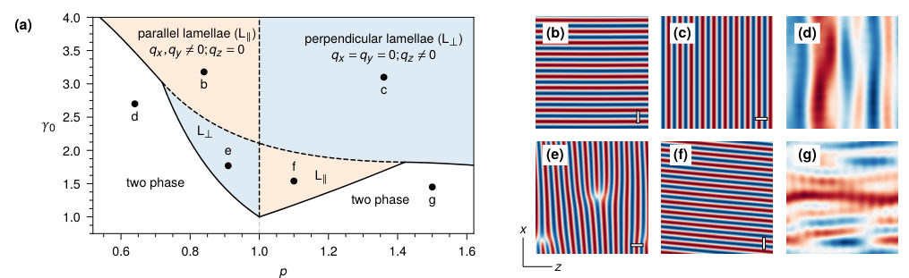
<figcaption class="paper-figure-caption"><b>Fig 1.</b> FIG. 1. Phase diagram indicating the stability of the various phases of an elastomer that is uniaxially stretched or compressed in the (p, γ0) plane. These phases are the ones that appear first during a temperature quench at the critical volume fraction where the order parameter ψ0 = 0. The anisotropy factor p &lt; 1 denotes compression, p &gt; 1 denotes stretching, and γ0 is the elastocapillary number. For illustrative purposes, we set the critical parameters to (ϕc, Tc) = (0.2, 0), and all other free-energy parameters are set to unity. The temperature T varies across the diagram, and at a given point, it is taken to be slightly less than the microphase separation temperature Tm(0) at that point...</figcaption>
</figure>
<figure class="paper-figure-card">
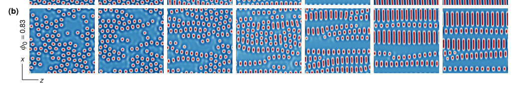
<figcaption class="paper-figure-caption"><b>Fig 2.</b> FIG. 2. Evolution of the microphase morphology as the anisotropy in the initial swelling increases in equal increments from p = 1 (isotropic state) to p = 1.5 (left to right). Polymer-rich and solvent-rich regions are shown in blue and red, respectively. In all panels, the temperature T = −3.4 and the elastocapillary number γ0 = 4. Other parameters are the same as in Fig. 1. The mean polymer volume fraction ϕ0 is chosen to be ϕ0 = 0.61 in (a), and ϕ0 = 0.83 in (b). For isotropic swelling, they correspond to a hexagonal phase and the hexagonal-uniform phase coexistence (see Fig. 2 of Part I [20]). As the anisotropy increases, the system undergoes a series of first-order transitions,...</figcaption>
</figure>
<figure class="paper-figure-card">
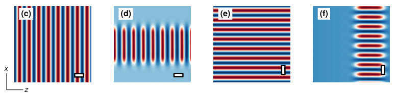
<figcaption class="paper-figure-caption"><b>Fig 3.</b> FIG. 3. Phase diagram in the polymer volume fraction–temperature (ϕ0, T) plane for a uniaxially deformed elastomer with elastocapillary number γ0 = 4 and anisotropy factor (a) p = 3/2 &gt; 1 (elongation) and (b) p = 2/3 &lt; 1 (compression). For illustrative purposes, we took the critical parameters (ϕc, Tc) = (0.2, 0), and set all other parameters in the free energy to unity. Other parameters are the same as in Fig. 1. In both panels (a) and (b), the dashed curves indicate a line of second-order transitions from the uniform phase to the perpendicular (L⊥) or parallel (L∥) lamellar phase, respectively. The colored regions bounded by first-order transition lines (solid curves) show coexistence...</figcaption>
</figure>
<figure class="paper-figure-card">
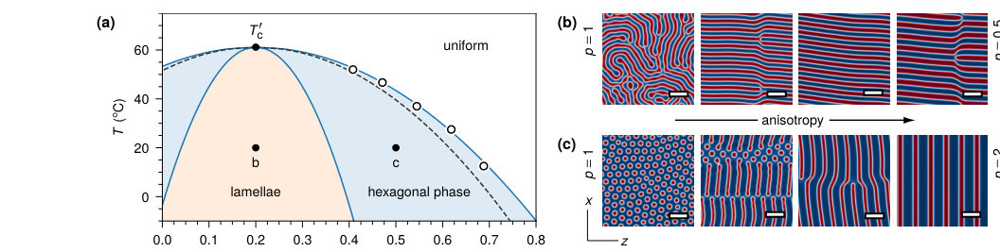
<figcaption class="paper-figure-caption"><b>Fig 4.</b> FIG. 4. Phase diagram in the (ϕ0, T) plane for an isotropically swollen elastomer with dry-state Young’s modulus Y = 350 kPa. The dashed curve marks the microphase-separation boundary predicted by linear stability analysis. The binodals (solid curves) terminate at a shifted critical point T ′ c. For constructing the phase diagram, we chose the parameter values κ = 0.013 kPa µm2, Tc = 70 ◦C, ϕc = 0.2, a = 0.025 kPa K−1, and b = 2 kPa in the free energy [20]. Representative morphologies obtained via numerical minimization of the free energy are shown in panels (b) and (c). The associated (ϕ0, T) values are marked by black dots in panel (a). In both (b) and (c), the degree of anisotropy...</figcaption>
</figure>
<figure class="paper-figure-card">
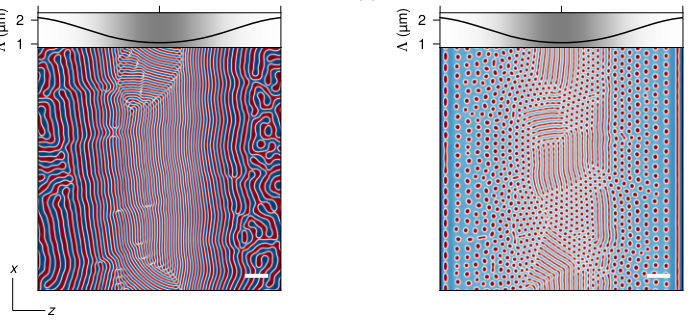
<figcaption class="paper-figure-caption"><b>Fig 5.</b> FIG. 5. Morphologies of the microphase-separated domains in an elastomer with varying stiffness when the mean polymer volume fraction is (a) at criticality, ϕ0 = ϕc = 0.2 and (b) off critical, ϕ0 = 0.5 &gt; ϕc. Polymer-rich and solvent-rich regions are colored in blue and red, respectively, and the scale bar is 4 µm. In both (a) and (b), the dry Young’s modulus varies from Y = 200 kPa to Y = 800 kPa (as indicated by the gradient in the top panels). This leads to a predicted domain size Λ = 2πq−1 m ≈1–2 µm (solid curves in the top panels), in agreement with the experimental observations in Ref. [6].</figcaption>
</figure>
</div>

<p><strong>Summary.</strong> This work theoretically examines how mechanical anisotropy, induced by uniaxial swelling or stiffness gradients, dictates the phase behavior and resulting microstructures in swollen elastomers. By coupling Ginzburg-Landau theory with linearized elastic energy, the authors predict the formation of specific microphases and quantify how external mechanical fields modify these transitions.</p>
<p><strong>Why it may be interesting.</strong> While focused on soft matter, the methodology of coupling phase separation (order parameter dynamics) with mechanical constraints (elastic energy) is relevant to non-equilibrium statistical mechanics and pattern formation in complex systems.</p>
<details>
<summary>Detailed structure</summary>
<p><strong>Main problem.</strong> The paper investigates how mechanical anisotropy influences the phase transitions and resulting microphase morphologies in swollen elastomers.</p>
<p><strong>Main result.</strong> Uniaxial swelling can stabilize lamellar microphases whose orientation depends on the applied stretch, and stiffness gradients cause spatial variations in the characteristic microphase domain size.</p>
<p><strong>Method.</strong> The analysis uses a free energy functional approach, linearizing the elastic energy and deriving an effective free energy in terms of the order parameter, followed by stability analysis in Fourier space.</p>
<p><strong>Model / system.</strong> The system is swollen elastomers modeled by a crosslinked polymer network and solvent. The free energy combines a Ginzburg-Landau term with an elastic energy term derived from the nonlinear elastic energy.</p>
<p><strong>Key observables.</strong> Microphase separation temperature (Tm), bulk instability temperature (T0), and the characteristic microphase domain size.</p>
<p><strong>Important parameters / regimes.</strong> Anisotropy factor (p), Elastocapillary Number (gamma_0), and the wavevector dependence of the longitudinal modulus (M_q).</p>
<p><strong>Assumptions / limitations.</strong> The system is assumed to be at thermodynamic equilibrium in an affinely deformed state, and the elastic energy is linearized to quadratic order in the displacement field.</p>
<p><strong>Figures summary.</strong> The paper discusses a phase diagram showing the stability of lamellar microphases in the plane of the anisotropy factor (p) and the elastocapillary number (gamma_0).</p>
<p><strong>Paper structure.</strong> The paper builds upon previous work (Part I), first deriving the total free energy functional by combining Ginzburg-Landau and linearized elastic energies. It then analyzes the effects of uniaxial swelling and stiffness gradients by examining the resulting wavevector-dependent moduli and stability criteria.</p>
</details>
<details>
<summary>Abstract</summary>
<p>In swollen elastomers, elasticity can arrest macroscopic demixing between the polymer network and the solvent, producing stable domains of finite size. While previous theories have focused on isotropically swollen elastomers, anisotropy strongly influences the phase behavior of many related systems, such as gels and crosslinked polymer blends. Building on the approach developed in Part I of this two-part paper, we investigate the effects of two experimentally induced sources of anisotropy: uniaxial swelling and stiffness gradients. We show that uniaxial swelling can lead to the formation of stable lamellar microphases and modify phase behavior, while stiffness gradients can cause spatial variations in the characteristic microphase size.</p>
</details>
<p><sub><a href="#top">↑ back to top</a></sub></p>

<p><a id="paper-2608.26277"></a></p>
<h3 id="quantizing-the-guiding-center-do-quantization-and-coarse-graining-commute"><a href="http://arxiv.org/abs/2608.26277v1">Quantizing the guiding center: do quantization and coarse graining commute?</a></h3>
<p><strong>Authors:</strong> Rodrigo Andrade e Silva, Ted Jacobson<br>
<strong>Type:</strong> theory · <strong>Category:</strong> other · <strong>PDF:</strong> <a href="https://arxiv.org/pdf/2608.26277v1">https://arxiv.org/pdf/2608.26277v1</a><br>
<strong>Analysis basis:</strong> full PDF text, analyzed in chunks
<strong>Topic relevance:</strong> <code>Keldysh / 2PI / non-Gaussian methods</code> <strong>2/5</strong></p>
<div class="figure-strip-hint">↔ Scroll figures horizontally</div>
<div class="paper-figures-scroll">
<figure class="paper-figure-card">
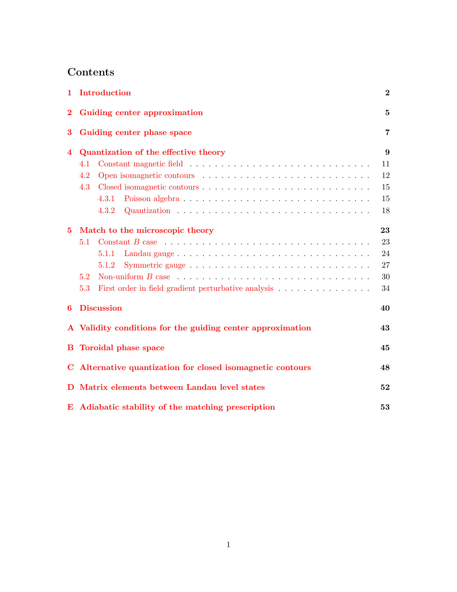
<figcaption class="paper-figure-caption"><b>Fig 1.</b> Low-resolution page preview, page 2</figcaption>
</figure>
<figure class="paper-figure-card">
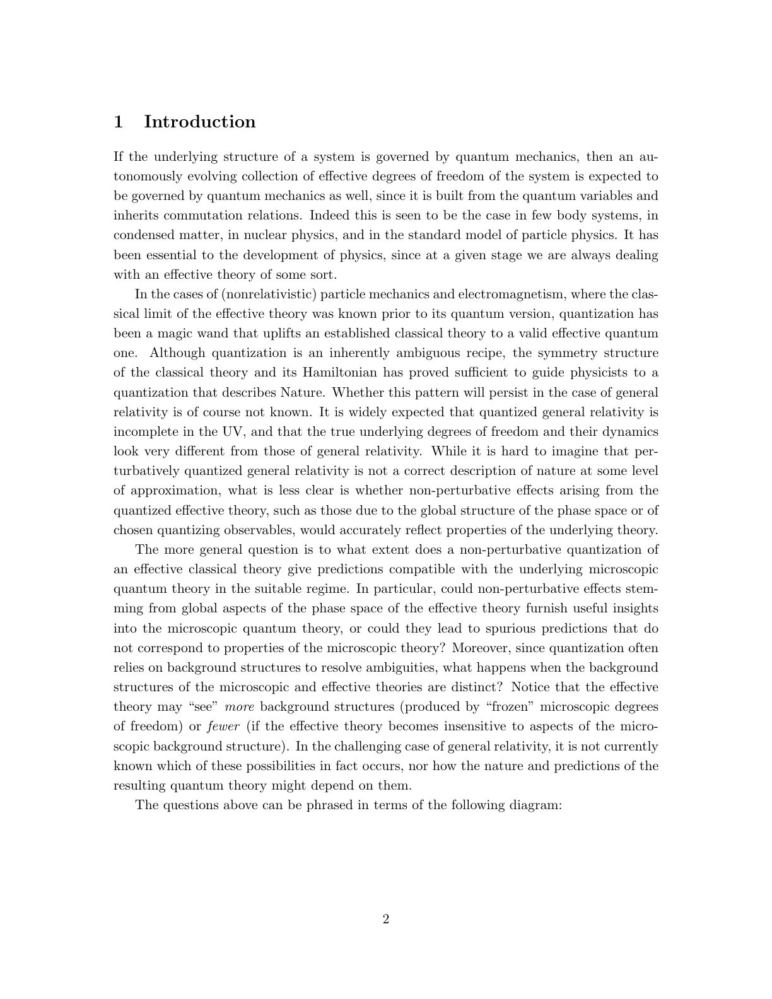
<figcaption class="paper-figure-caption"><b>Fig 2.</b> Low-resolution page preview, page 3</figcaption>
</figure>
<figure class="paper-figure-card">
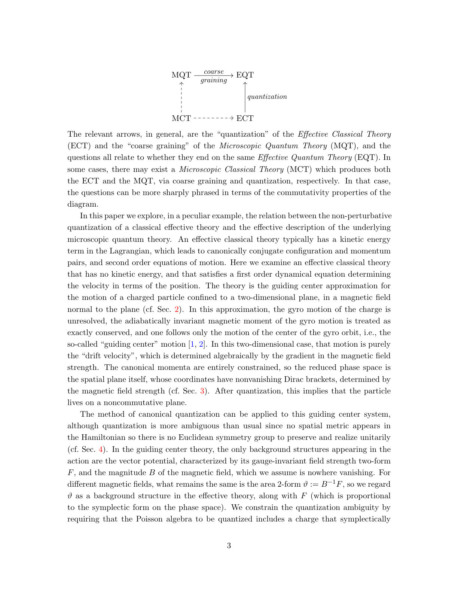
<figcaption class="paper-figure-caption"><b>Fig 3.</b> Low-resolution page preview, page 4</figcaption>
</figure>
<figure class="paper-figure-card">
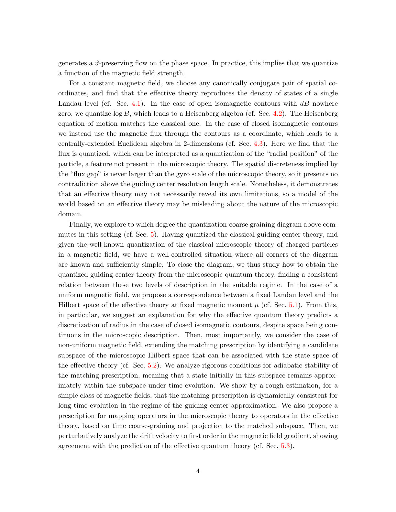
<figcaption class="paper-figure-caption"><b>Fig 4.</b> Low-resolution page preview, page 5</figcaption>
</figure>
<figure class="paper-figure-card">
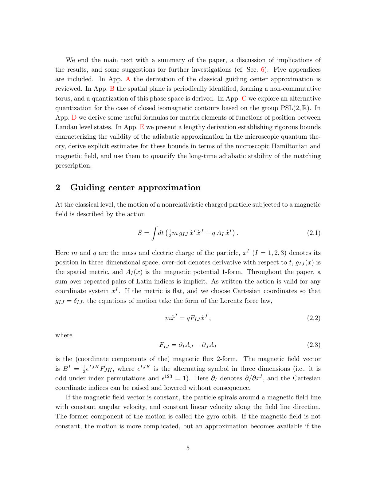
<figcaption class="paper-figure-caption"><b>Fig 5.</b> Low-resolution page preview, page 6</figcaption>
</figure>
</div>

<p><strong>Summary.</strong> This work addresses the fundamental question of whether quantizing an effective theory yields the same results as coarse-graining the full microscopic theory. Using a charged particle in a magnetic field, the authors find that while the theories match generally, the effective theory predicts unphysical quantization effects for closed magnetic paths. This serves as a cautionary example regarding the reliability of effective quantum descriptions.</p>
<p><strong>Why it may be interesting.</strong> The core theme—the failure of quantization procedures to commute with coarse-graining—is a fundamental issue in effective field theories, relevant across quantum gravity, condensed matter, and quantum optics.</p>
<details>
<summary>Detailed structure</summary>
<p><strong>Main problem.</strong> The paper investigates whether the process of quantizing an effective classical theory commutes with the process of coarse-graining the underlying microscopic quantum theory.</p>
<p><strong>Main result.</strong> While the quantized effective theory generally agrees with the microscopic theory, it predicts spurious spatial discreteness (quantization of 'radius') for closed magnetic contours, suggesting quantization of effective theories can yield nonphysical predictions.</p>
<p><strong>Method.</strong> The authors use nonperturbative, group-theoretic quantization techniques and compare the results against the coarse-graining procedure applied to the full microscopic theory.</p>
<p><strong>Model / system.</strong> The system modeled is a charged particle drifting in a two-dimensional magnetic field. The analysis uses the guiding center approximation, which simplifies the dynamics by ignoring small-scale gyro motion.</p>
<p><strong>Key observables.</strong> Quantization of 'radius' (spatial discreteness), density of states (Landau levels), and the consistency of the matching prescription.</p>
<p><strong>Important parameters / regimes.</strong> Magnetic field strength B(x), magnetic moment $\mu$, and the gyro scale (which sets the limit for spurious effects).</p>
<p><strong>Assumptions / limitations.</strong> The guiding center approximation is valid when the gyro radius is much smaller than the magnetic field variation length scale. The analysis also assumes the existence of a matching prescription between the two quantum descriptions.</p>
<p><strong>Paper structure.</strong> The paper develops the effective theory via the guiding center approximation, derives the reduced phase space dynamics, performs the nonperturbative quantization, and then rigorously compares this quantum result against the coarse-grained microscopic theory, highlighting discrepancies in specific geometric regimes.</p>
</details>
<details>
<summary>Abstract</summary>
<p>We develop a nonperturbative, group-theoretic quantization of the effective guiding center theory of a charged particle drifting in a magnetic field in two spatial dimensions, and compare the resulting quantum theory with a corresponding coarse graining of the underlying microscopic theory. In the classical effective theory, the small gyro motion is not resolved, while the motion of the center of the gyro orbit remains observable. The reduced phase space is the physical space itself, so quantization leads to noncommuting spatial coordinates, and the effective theory loses access to the metric structure of physical space, retaining only its area structure. By formulating a prescription to match between the microscopic and effective quantum theories, we find that the predictions of the quantized effective theory are generally consistent with those of the microscopic theory. However, for closed isomagnetic contours the effective theory predicts a quantization of ``radius'', a spatial discreteness absent from the microscopic theory. This illustrates that quantization of an effective theory may yield spurious nonperturbative predictions, even if that quantum theory shows no internal signs of breakdown.</p>
</details>
<p><sub><a href="#top">↑ back to top</a></sub></p>

<p><a id="paper-2608.26825"></a></p>
<h3 id="quantum-chaos-and-spread-of-states-in-krylov-subspace-a-topical-review"><a href="http://arxiv.org/abs/2608.26825v1">Quantum Chaos and Spread of States in Krylov Subspace: A Topical Review</a></h3>
<p><strong>Authors:</strong> Hyun-Sik Jeong, Juan F. Pedraza<br>
<strong>Type:</strong> theory · <strong>Category:</strong> other · <strong>PDF:</strong> <a href="https://arxiv.org/pdf/2608.26825v1">https://arxiv.org/pdf/2608.26825v1</a><br>
<strong>Analysis basis:</strong> full PDF text, analyzed in chunks
<strong>Topic relevance:</strong> <code>analog quantum simulation</code> <strong>2/5</strong></p>
<div class="figure-strip-hint">↔ Scroll figures horizontally</div>
<div class="paper-figures-scroll">
<figure class="paper-figure-card">
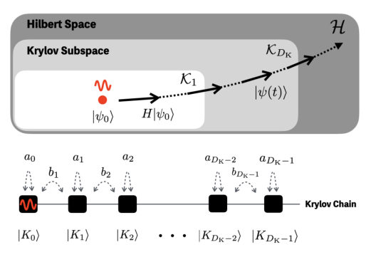
<figcaption class="paper-figure-caption"><b>Fig 1.</b> Figure 1 Schematic dynamics of the initial state |ψ0⟩within DK-dimensional Krylov subspace KDK under the given Hamil- tonian H. Any initial state |ψ0⟩is mapped or projected to the first site (n = 0) of the Krylov chain, KDK |ψ0⟩= (1, 0, · · · , 0)T , and the evolution corresponds to the particle hopping to subsequent sites.</figcaption>
</figure>
<figure class="paper-figure-card">
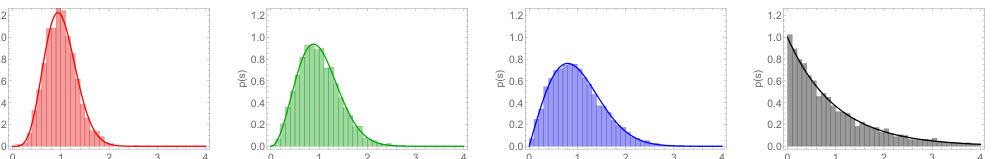
<figcaption class="paper-figure-caption"><b>Fig 2.</b> Figure 2 Nearest-neighbor level spacing distributions. The probability density p(s) is shown for the three standard random matrix ensembles (GSE, GUE, and GOE) (red, green, blue) and the integrable Poisson system (black). Histograms represent numerical data obtained by diagonalizing random matrices of dimension 200, with statistics averaged over 50 independent realizations. Solid colored lines denote the corresponding analytical predictions: the exact the Wigner surmise for the Gaussian ensembles (16) and Poisson distribution (17).</figcaption>
</figure>
<figure class="paper-figure-card">
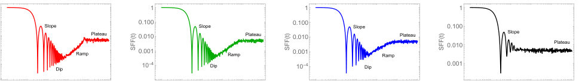
<figcaption class="paper-figure-caption"><b>Fig 3.</b> Figure 3 Spectral form factor for the random matrix ensembles (GSE, GUE, and GOE) (red, green, blue) and the integrable Poisson system (black). The SFF is evaluated at infinite temperature (β = 0) and plotted on a log-log scale. The numerical curve is generated from matrices of size 200, averaged over 50 realizations. The evolution displays the defining dynamical signatures of quantum chaos for the random matrix ensembles, i.e., the ramp structure: an initial early decay governed by the average density of states, an interruption at the dip time, a subsequent linear ramp reflecting two-level correlations, and a final saturation into a constant plateau.</figcaption>
</figure>
<figure class="paper-figure-card">
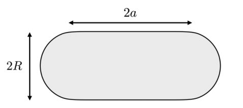
<figcaption class="paper-figure-caption"><b>Fig 4.</b> Figure 4 The geometry of the stadium billiard with the area A = πR2 + 4aR.</figcaption>
</figure>
<figure class="paper-figure-card">
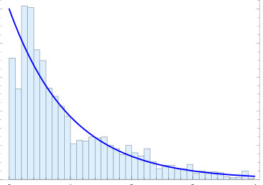
<figcaption class="paper-figure-caption"><b>Fig 5.</b> Figure 6 Nearest-neighbor level spacing distribution in the mixed-field Ising model (23) for the even symmetry sector H1 with N = 12 sites when (hx, hz) = (−1.05, 0.5) (upper panel) and hx, hz) = (−1, 0.001) (lower panel).</figcaption>
</figure>
</div>

<p><strong>Summary.</strong> This review introduces Krylov state complexity as a powerful, general diagnostic for quantifying quantum chaos and information spreading. By utilizing the Lanczos algorithm to map dynamics onto a Krylov subspace, it provides a measure that bridges spectral analysis and real-time evolution. The paper demonstrates its utility across diverse models, from quantum billiards to holographic gravity, highlighting the characteristic 'overshoot' as a key signature of chaotic behavior.</p>
<p><strong>Why it may be interesting.</strong> This work is highly relevant as it provides a unified, mathematically rigorous tool (Krylov complexity) to probe chaos and information spreading, connecting spectral theory to real-time dynamics, which is crucial for understanding open quantum systems and many-body dynamics.</p>
<details>
<summary>Detailed structure</summary>
<p><strong>Main problem.</strong> The paper seeks a universal diagnostic tool to characterize quantum chaos and the spreading of quantum information across diverse physical systems.</p>
<p><strong>Main result.</strong> Krylov state complexity is proposed as a versatile diagnostic that bridges spectral properties and real-time dynamics, revealing characteristic overshoots in chaotic systems.</p>
<p><strong>Method.</strong> The core method involves constructing the Krylov subspace using the Lanczos algorithm to map the system's dynamics onto a one-dimensional chain, allowing the calculation of state complexity.</p>
<p><strong>Model / system.</strong> The analysis applies to a broad range of quantum systems, including quantum billiards, quantum spin chains, the SYK model, and holographic gravity models (AdS/CFT).</p>
<p><strong>Key observables.</strong> Krylov State Complexity (Spread Complexity), Characteristic Overshoot, Spectral Statistics (GOE/GUE), and Out-of-Time-Order Correlators (OTOCs).</p>
<p><strong>Important parameters / regimes.</strong> The analysis considers regimes ranging from integrable to chaotic dynamics, and includes both Hermitian and non-Hermitian settings.</p>
<p><strong>Assumptions / limitations.</strong> The primary assumption is that Krylov complexity provides a robust, general diagnostic that complements existing, but incomplete, chaos measures like OTOCs and spectral statistics.</p>
<p><strong>Paper structure.</strong> The review progresses by first establishing the need for a general diagnostic, then detailing the formal construction of Krylov complexity via the Lanczos algorithm, and finally applying this tool to various model classes (Hermitian, non-Hermitian, holographic).</p>
</details>
<details>
<summary>Abstract</summary>
<p>Krylov state complexity, or spread complexity, has emerged as a sharp and versatile diagnostic of quantum chaos, information spreading, and many-body dynamics. Built from the Lanczos algorithm and grounded in the optimal-basis theorem, Krylov complexity thereby provides a robust spectroscopic window into quantum dynamics. A central theme is the characteristic overshoot observed in chaotic systems: a complexity peak in which chaotic evolution drives the state deeper into the Krylov chain than in integrable systems before relaxing to equilibrium. This behavior, tied to random-matrix universality classes of spectral statistics, is illustrated across a broad range of models, including quantum billiards, quantum spin chains, and variants of the SYK model. We also discuss proposed holographic descriptions of Krylov complexity in Einstein gravity, and conclude by outlining future directions and open problems, including time-dependent systems and quantum-field-theoretic formulations. A Mathematica notebook is provided for numerical exploration of Krylov complexity and spectral statistics across models.</p>
</details>
<p><sub><a href="#top">↑ back to top</a></sub></p>

<p><a id="paper-2608.27217"></a></p>
<h3 id="tight-bounds-for-purity-and-product-testing-from-partial-transposition"><a href="http://arxiv.org/abs/2608.27217v1">Tight Bounds for Purity and Product Testing from Partial Transposition</a></h3>
<p><strong>Authors:</strong> Oren Akresh, Jacob Beckey<br>
<strong>Type:</strong> theory · <strong>Category:</strong> quantum information and computing · <strong>PDF:</strong> <a href="https://arxiv.org/pdf/2608.27217v1">https://arxiv.org/pdf/2608.27217v1</a><br>
<strong>Analysis basis:</strong> full PDF text, analyzed in chunks
<strong>Topic relevance:</strong> <code>quantum measurements</code> <strong>2/5</strong></p>
<div class="figure-strip-hint">↔ Scroll figures horizontally</div>
<div class="paper-figures-scroll">
<figure class="paper-figure-card">
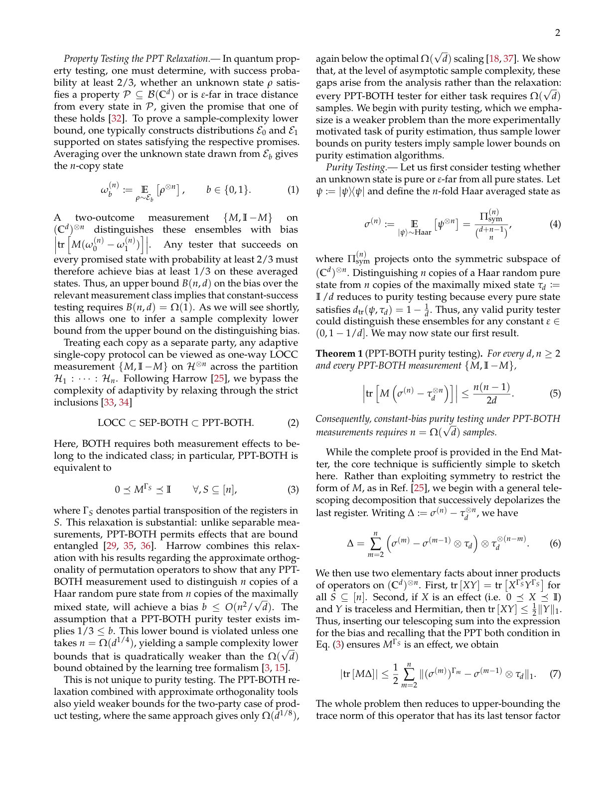
<figcaption class="paper-figure-caption"><b>Fig 1.</b> Low-resolution page preview, page 2</figcaption>
</figure>
<figure class="paper-figure-card">
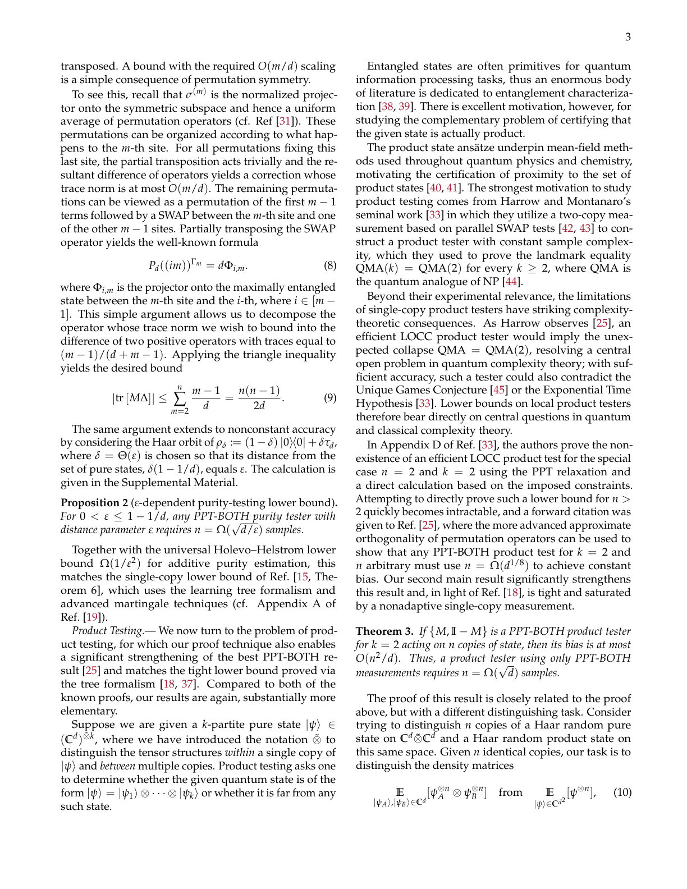
<figcaption class="paper-figure-caption"><b>Fig 2.</b> Low-resolution page preview, page 3</figcaption>
</figure>
<figure class="paper-figure-card">
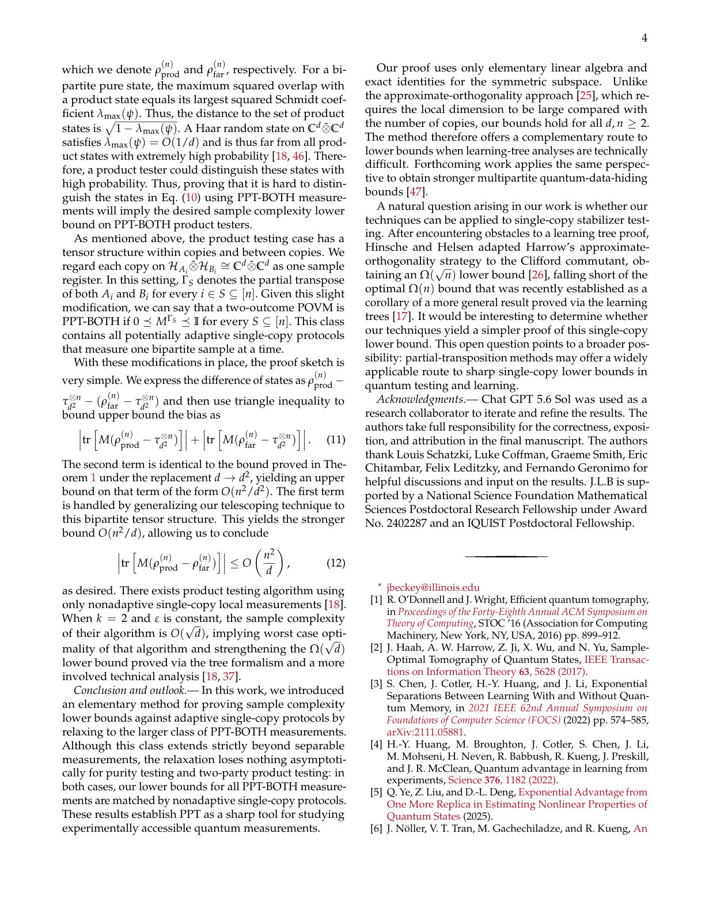
<figcaption class="paper-figure-caption"><b>Fig 3.</b> Low-resolution page preview, page 4</figcaption>
</figure>
<figure class="paper-figure-card">
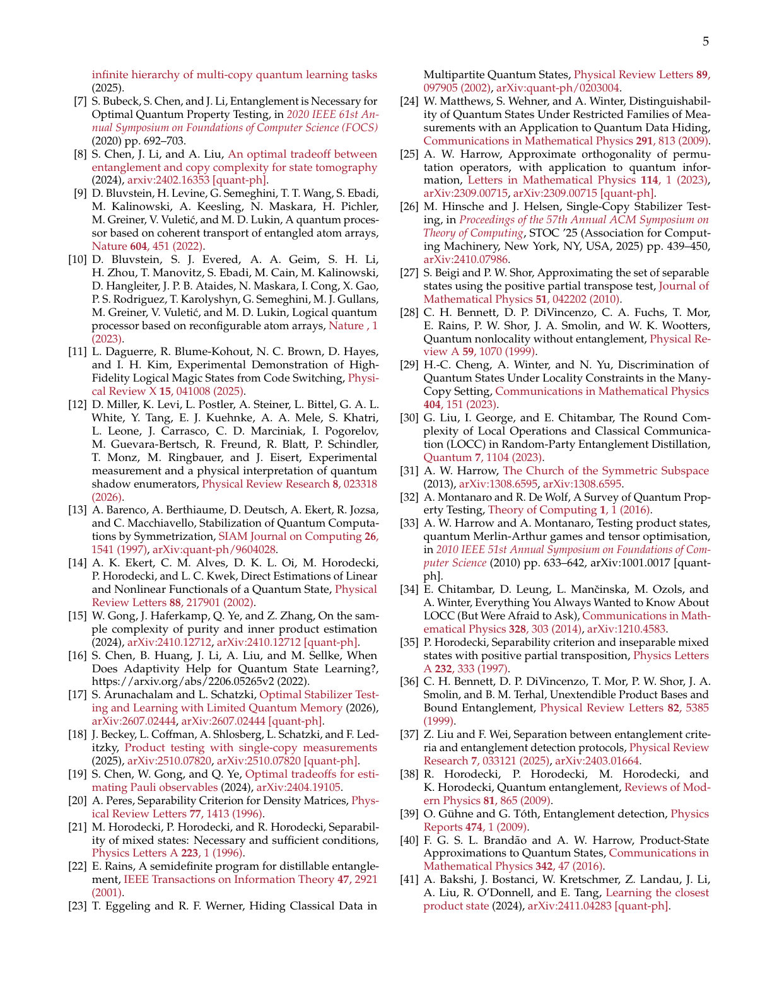
<figcaption class="paper-figure-caption"><b>Fig 4.</b> Low-resolution page preview, page 5</figcaption>
</figure>
<figure class="paper-figure-card">
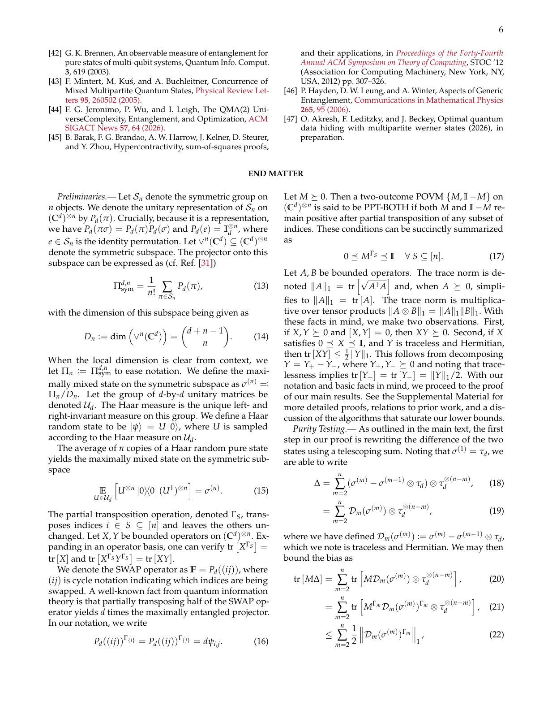
<figcaption class="paper-figure-caption"><b>Fig 5.</b> Low-resolution page preview, page 6</figcaption>
</figure>
</div>

<p><strong>Summary.</strong> This theoretical paper derives lower bounds for quantum state testing (purity and product testing) using only measurements constrained by the PPT condition. The authors demonstrate that this mathematical relaxation is surprisingly strong, preserving the optimal $\Omega(\sqrt{d})$ scaling for the required number of samples. This provides a simple, powerful technique for establishing fundamental limits in quantum information theory.</p>
<p><strong>Why it may be interesting.</strong> The result provides a powerful, elementary method to derive sharp lower bounds for quantum state discrimination tasks, which is crucial for understanding the limits of quantum characterization protocols.</p>
<details>
<summary>Detailed structure</summary>
<p><strong>Main problem.</strong> The paper establishes lower bounds on the sample complexity required to test quantum properties, specifically purity and product structure, of an unknown quantum state.</p>
<p><strong>Main result.</strong> It shows that using the Positive-Partial-Transpose (PPT) relaxation does not weaken the asymptotic sample complexity bounds for these tasks, matching the optimal single-copy lower bounds of $\Omega(\sqrt{d})$.</p>
<p><strong>Method.</strong> The authors use techniques involving telescoping sums and bounding the trace norm of the difference between the state being tested and a reference state, utilizing the PPT-BOTH measurement constraint.</p>
<p><strong>Model / system.</strong> The analysis concerns an unknown quantum state $
ho$ in a $d$-dimensional Hilbert space, tested across $n$ copies ($
ho^{\otimes n}$). The tasks involve distinguishing the Haar averaged pure state ($\sigma(n)$) from the maximally mixed state ($   au^{\otimes n}$) for purity testing, and distinguishing product states from mixed states for product testing.</p>
<p><strong>Key observables.</strong> Bias of the measurement, sample complexity ($n$), purity ($\sigma(n)$ vs $ au^{\otimes n}$), and product structure ($
ho(n)_{ ext{prod}}$ vs $    au^{\otimes n}$).</p>
<p><strong>Important parameters / regimes.</strong> Local dimension ($d$), number of samples ($n$), and the accuracy parameter ($\epsilon$).</p>
<p><strong>Assumptions / limitations.</strong> The analysis is restricted to measurements satisfying the Positive-Partial-Transpose (PPT-BOTH) condition, which is a mathematical relaxation of the full measurement set.</p>
<p><strong>Paper structure.</strong> The paper develops the lower bounds for purity testing and product testing separately, using similar mathematical machinery involving bounding the trace norm of the difference operator via telescoping sums and the PPT constraint.</p>
</details>
<details>
<summary>Abstract</summary>
<p>Coherent measurements across multiple copies of an unknown quantum state can substantially reduce the number of samples required to learn its properties, but remain experimentally challenging. Current experiments typically prepare and measure one copy at a time, potentially adapting later measurements to earlier outcomes. A central challenge is adaptivity, which makes the space of possible measurement strategies difficult to characterize. The positive-partial-transpose (PPT) relaxation bypasses this complexity by considering a larger, mathematically tractable class of measurements, at the risk of weakening the resulting bounds. Here we show, surprisingly, that the relaxation loses nothing at the level of asymptotic sample complexity for two fundamental tasks: purity testing and product testing. In both cases, lower bounds against the full class of PPT measurements are matched by nonadaptive single-copy protocols. Moreover, our proof requires only basic symmetric subspace identities, providing a simple route to sharp lower bounds for adaptive single-copy measurements.</p>
</details>
<p><sub><a href="#top">↑ back to top</a></sub></p>

<p><a id="paper-2608.27216"></a></p>
<h3 id="qh-gem-quantum-hydrodynamic-generative-modeling"><a href="http://arxiv.org/abs/2608.27216v1">QH-GEM: Quantum-Hydrodynamic Generative Modeling</a></h3>
<p><strong>Authors:</strong> Harbir Antil, Alex Kaltenbach, Sarswati Shah<br>
<strong>Type:</strong> both · <strong>Category:</strong> numerical methods · <strong>PDF:</strong> <a href="https://arxiv.org/pdf/2608.27216v1">https://arxiv.org/pdf/2608.27216v1</a><br>
<strong>Analysis basis:</strong> full PDF text, analyzed in chunks
<strong>Topic relevance:</strong> <code>Keldysh / 2PI / non-Gaussian methods</code> <strong>1/5</strong> · <code>methods for driven-dissipative</code> <strong>1/5</strong> · <code>quantum measurements</code> <strong>1/5</strong></p>
<div class="figure-strip-hint">↔ Scroll figures horizontally</div>
<div class="paper-figures-scroll">
<figure class="paper-figure-card">
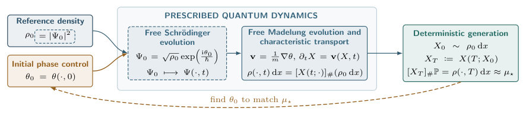
<figcaption class="paper-figure-caption"><b>Fig 1.</b> Figure 1: Phase-controlled quantum-hydrodynamic generation obtained from the free Schr¨odinger problem (1.1) via the Madelung transform (1.2). The reference Born probability density ρ0 : Rd →R&gt;0 is fixed, whereas the initial phase function θ0 : Rd →R is selected through PDE-constrained phase control, so that, given an initial sample X0 ∼ρ0 dx, the terminal-time measure ρ(·, T) dx ∈P(Rd), equivalently the law of XT := X(T; X0), approximates the target measure µ⋆∈P(Rd). Once θ0 : Rd →R is fixed, sample transport is deterministic.</figcaption>
</figure>
<figure class="paper-figure-card">
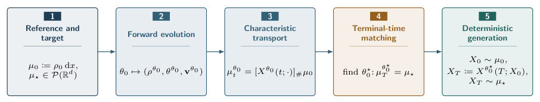
<figcaption class="paper-figure-caption"><b>Fig 2.</b> Figure 2: Phase-controlled generative procedure. Steps 1–4 seek an initial phase function θ⋆ 0 : Rd →R satisfying the terminal-time matching condition (2.17); then, once such a phase function has been found, Step 5 maps an initial sample X0 ∼µ0 deterministically to a (terminal-time) generated sample XT ∼µ⋆ via the characteristic-flow representation (2.14) in Proposition 2.3.</figcaption>
</figure>
<figure class="paper-figure-card">
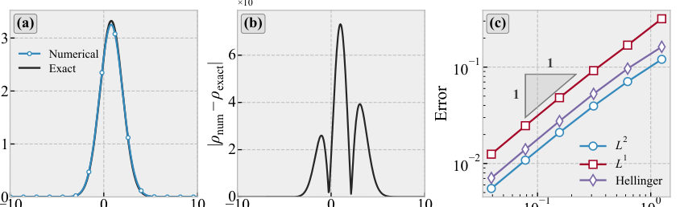
<figcaption class="paper-figure-caption"><b>Fig 3.</b> Figure 3: Validation of the discrete forward solver against the exact Gaussian solution at T = 0.3. (a) computed and exact terminal densities for Nx = 301. (b) corresponding pointwise absolute error. (c) discrete L2-, L1-, and Hellinger errors under the uniform mesh refinements Nx ∈{2i | i = 4, . . . , 9}, with the time step refined accordingly.</figcaption>
</figure>
<figure class="paper-figure-card">

<figcaption class="paper-figure-caption"><b>Fig 4.</b> Figure 4: Density evolution induced by the computed full-grid initial phase function θ⋆ 0,h = mq⋆ h ∈Vh,0, identified by minimizing the PDE-constrained discrete cost functional (5.3) to approximate the target density ρ⋆,h ∈Ph at T = 0.3. The snapshots show t = 0, T</figcaption>
</figure>
<figure class="paper-figure-card">

<figcaption class="paper-figure-caption"><b>Fig 5.</b> Figure 5: 2D density evolution induced by the computed full-grid initial phase θ⋆ 0,h = mq⋆ h ∈Vh,0, identified by minimizing the PDE-constrained discrete cost functional (5.3) to approximate the target probability density ρ⋆,h ∈Ph at T = 0.3. On a 91 × 91 grid, the first four panels show t = 0, T</figcaption>
</figure>
</div>

<p><strong>Summary.</strong> This paper introduces QH-GEM, a generative model that uses the deterministic evolution dictated by the free-particle Schrödinger equation to sample from a target quantum state. It achieves this by solving a PDE-constrained optimization problem to determine the necessary initial phase function. This approach offers a physically rigorous alternative to standard generative models by embedding the generation process within established quantum hydrodynamics.</p>
<p><strong>Why it may be interesting.</strong> This work provides a novel, physically grounded method for generative modeling in quantum dynamics, bypassing the need to learn complex time-dependent Hamiltonians or velocity fields directly from data.</p>
<details>
<summary>Detailed structure</summary>
<p><strong>Main problem.</strong> The paper develops a deterministic, physically constrained generative framework to sample from a target probability distribution by controlling the initial phase function of a free-particle quantum system.</p>
<p><strong>Main result.</strong> The framework successfully demonstrates the ability to steer the evolution of a reference Gaussian density to match complex, asymmetric bimodal target distributions using PDE-constrained optimization.</p>
<p><strong>Method.</strong> It formulates terminal-time distribution matching as a PDE-constrained phase-identification problem, optimizing the initial phase function ($   heta_0$) within the free Madelung system.</p>
<p><strong>Model / system.</strong> The model is based on the free-particle Schrödinger equation, analyzed via the Madelung transform, which couples the Born probability density ($
ho$) and the phase function ($   heta$) through the Bohm quantum potential.</p>
<p><strong>Key observables.</strong> Born probability density ($
ho$), phase function ($   heta$), hydrodynamic velocity field ($\mathbf{v}$), and the resulting time-evolved density.</p>
<p><strong>Important parameters / regimes.</strong> The optimization uses regularization parameters ($\lambda_s, \lambda_c$) and involves matching specific Gaussian and bimodal target structures.</p>
<p><strong>Assumptions / limitations.</strong> The analysis relies on the existence of a unique global characteristic flow and the assumption that the initial phase control is sufficient to govern the entire evolution.</p>
<p><strong>Figures summary.</strong> Figures illustrate the phase-controlled generation process, showing the evolution from an initial Gaussian state towards an asymmetric bimodal target density.</p>
<p><strong>Paper structure.</strong> The paper introduces the free Madelung system and its Hamiltonian structure, formulates the PDE-constrained phase-identification problem, derives explicit dynamics for Gaussian cases, and validates the solver numerically on bimodal targets.</p>
</details>
<details>
<summary>Abstract</summary>
<p>In this paper, we develop a deterministic, physically constrained generative framework based on the Madelung formulation of the free-particle Schrödinger equation. A reference Born probability density and a controllable initial phase function serve as initial data for the free Madelung system, which couples the Born probability density and phase function through the Bohm quantum potential, while the phase function determines the hydrodynamic velocity field. Provided that the Born probability density remains positive and the hydrodynamic velocity field generates a unique global characteristic flow, samples drawn from the reference density and transported along the characteristic flow are distributed according to the evolving Born probability density at every time.   As a consequence, randomness enters only through the initial sampling; the subsequent generation is deterministic and involves neither stochastic dynamics nor an independently parameterized time-dependent velocity field. We formulate terminal-time distribution matching as a PDE-constrained phase-identification problem and derive the underlying Hamiltonian and Fisher-information structure. For isotropic Gaussian wave packets, we obtain explicit dynamics and a necessary and sufficient condition for exact reachability of isotropic Gaussian targets by quadratic initial phase functions, together with the corresponding sampling map. For a smooth prescribed potential initial velocity field, we further establish that the characteristic flow approximates the associated first-order transport map with an O(T^2) error, both uniformly and in the 1- and 2-Wasserstein distances. A numerical Gaussian benchmark validates the fully discrete forward solver, while full-grid PDE-constrained phase identification is demonstrated for asymmetric bimodal targets.</p>
</details>
<p><sub><a href="#top">↑ back to top</a></sub></p>

<p><a id="paper-2608.26600"></a></p>
<h3 id="auditing-structured-randomness-for-quantum-error-correction-under-a-bounded-cloud-fault-model"><a href="http://arxiv.org/abs/2608.26600v1">Auditing Structured Randomness for Quantum Error Correction under a Bounded Cloud Fault Model</a></h3>
<p><strong>Authors:</strong> Ziqing Guo, Anthony Lawrence, Renyu Wang, Randy Kuang, Ziwen Pan<br>
<strong>Type:</strong> both · <strong>Category:</strong> quantum information and computing · <strong>PDF:</strong> <a href="https://arxiv.org/pdf/2608.26600v1">https://arxiv.org/pdf/2608.26600v1</a><br>
<strong>Analysis basis:</strong> full PDF text, analyzed in chunks
<strong>Topic relevance:</strong> <code>QC/QI experiment</code> <strong>1/5</strong> · <code>quantum measurements</code> <strong>1/5</strong></p>
<div class="figure-strip-hint">↔ Scroll figures horizontally</div>
<div class="paper-figures-scroll">
<figure class="paper-figure-card">

<figcaption class="paper-figure-caption"><b>Fig 1.</b> Figure 1. Integrity audit. A client samples a fresh executable encoder Vs and submits the encoded state to a remote processor exposed to a bounded fault E. The provider observes the compiled seed; a co-tenant that commits before compilation is seed-blind. Inverse decoding and the ancilla syndrome test separate rejection, harmless acceptance, and accepted logical corruption.</figcaption>
</figure>
<figure class="paper-figure-card">

<figcaption class="paper-figure-caption"><b>Fig 2.</b> Figure 2. Dense results for k = 1 over 200 seeds per condition. (a) Closed-form Haar expectations (lines) and measured seed means (markers) for acceptance and accepted disturbance. (b) Fraction of n = 8 encoders that correct every tested single- qubit fault, plotted against the median source-level two-qubit instruction count. Connected points are HSE depths; the diamond is uniform Clifford. Crosses mark median worst- fault disturbance above 0.5; open circles mark values below it. Bars show 95% bootstrap intervals in (a) and Wilson intervals in (b).</figcaption>
</figure>
<figure class="paper-figure-card">

<figcaption class="paper-figure-caption"><b>Fig 3.</b> Figure 3. HSE ablation and attacker knowledge. Left: paired ablation at (n,k,d) = (8,1,12) over 200 seeds. (a) Change in worst-fault disturbance relative to the full HSE; squares show means and shading the central 90%. (b) Fraction of seeds safe against every tested fault; labels give mean two-qubit instruction counts. Right: (c) held-out scores at n = 8 for seed-aware, seed-blind, and uniformly random fault selection. Bars show 95% intervals.</figcaption>
</figure>
<figure class="paper-figure-card">

<figcaption class="paper-figure-caption"><b>Fig 4.</b> Figure 4. Gate-level HSE results over 20 seeds per condition. (a) Fraction of single-qubit Pauli faults that cause an accepted logical change in ideal circuits. (b) Fraction of all noisy shots that are both accepted and corrupted under gate-local depolarization with (p1, p2) = (10−3,10−2). Points show seed means and bars show 95% bootstrap intervals. Neither panel includes idle or leakage noise.</figcaption>
</figure>
</div>

<p><strong>Summary.</strong> This paper develops a rigorous audit framework to measure the integrity of QEC circuits running on untrusted cloud quantum hardware. By defining 'accepted logical disturbance,' the authors quantify how much corruption slips through the system despite error correction. They demonstrate that implementing per-run reseeding significantly boosts the system's resilience against sophisticated fault-injecting adversaries.</p>
<p><strong>Why it may be interesting.</strong> While focused on QEC, the rigorous mathematical framework for quantifying 'accepted corruption' and separating detection from actual error correction provides a generalizable robustness auditing tool applicable to any complex, fault-prone quantum computation.</p>
<details>
<summary>Detailed structure</summary>
<p><strong>Main problem.</strong> The paper addresses the critical issue of auditing the integrity of Quantum Error Correction (QEC) circuits executed on untrusted cloud quantum processors susceptible to fault injection.</p>
<p><strong>Main result.</strong> Reseeding the encoder significantly reduces the mean accepted logical disturbance from 0.150 to 0.020, quantifying a major integrity gain against sophisticated adversaries.</p>
<p><strong>Method.</strong> The authors define 'accepted logical disturbance' as an acceptance-weighted measure and derive its exact Haar expectation, evaluating this using a polynomial-cost seeded Clifford encoder family.</p>
<p><strong>Model / system.</strong> The model involves QEC encoding ($V_s$) on cloud quantum processors, where an adversary injects Pauli faults ($Q$) into the physical-to-logical fault map. The analysis uses both seed-aware and seed-blind attacker models.</p>
<p><strong>Key observables.</strong> Accepted logical disturbance, which quantifies harmful logical action in accepted results; the reduction factor between seed-aware and seed-blind fault models.</p>
<p><strong>Important parameters / regimes.</strong> Fault weight ($t$), code parameters (e.g., $[[5,1,3]]$ code), and the ratio of disturbance reduction ($\Delta_{blind}$).</p>
<p><strong>Assumptions / limitations.</strong> The analysis assumes the fault set $\mathcal{E}_t$ is restricted to Pauli strings and relies on the mathematical properties of Haar-random unitaries for expectation calculations.</p>
<p><strong>Figures summary.</strong> Figure 1 illustrates the integrity audit process, classifying outcomes as rejected, harmlessly accepted, or accepted with logical corruption. Table 1 compares the proposed audit against prior methods.</p>
<p><strong>Paper structure.</strong> The paper first defines the security metric (accepted logical disturbance) and derives its Haar expectation. It then evaluates this metric using a seeded Clifford encoder family under two distinct attacker knowledge models (seed-aware vs. seed-blind), culminating in quantitative results demonstrating the benefit of reseeding.</p>
</details>
<details>
<summary>Abstract</summary>
<p>Cloud quantum processors compile submitted quantum error correction circuits and may colocate them with untrusted workloads. A fixed public encoder gives a fault-injection adversary a reusable target. Per-run reseeding changes the physical-to-logical fault map. Exact Haar-random encoders have exponential circuit cost. Efficient random ensembles provide average-moment guarantees and leave worst-case accepted corruption uncharacterized. We define accepted logical disturbance, an acceptance-weighted measure of harmful logical action in accepted results, and derive its exact Haar expectation. We evaluate a polynomial-cost seeded Clifford encoder family using dense linear algebra and gate-level stabilizer simulation against faults chosen before or after the encoder is known. Reseeding reduces mean accepted logical disturbance from 0.150 for faults chosen after learning each encoder to 0.020 for one fault chosen before it is known. The 86.7% reduction results from rejection. The fixed distance-three \([[5,1,3]]\) code corrects every tested weight-one Pauli, while 18.5% of sampled encoders in the selected ensemble satisfy exact quantum error correction. The measured reduction quantifies the integrity gain from reseeding and separates postselected detection from exact correction under explicit fault and attacker-knowledge models.</p>
</details>
<p><sub><a href="#top">↑ back to top</a></sub></p>

<p><a id="paper-2608.27445"></a></p>
<h3 id="bands-geometry-origin-of-quantum-spin-transport-phenomena"><a href="http://arxiv.org/abs/2608.27445v1">Band's Geometry Origin of Quantum Spin Transport Phenomena</a></h3>
<p><strong>Authors:</strong> Elena Derunova, Mazhar N. Ali<br>
<strong>Type:</strong> theory · <strong>Category:</strong> other · <strong>PDF:</strong> <a href="https://arxiv.org/pdf/2608.27445v1">https://arxiv.org/pdf/2608.27445v1</a><br>
<strong>Analysis basis:</strong> full PDF text, analyzed in chunks
<strong>Topic relevance:</strong> <code>Keldysh / 2PI / non-Gaussian methods</code> <strong>1/5</strong> · <code>analog quantum simulation</code> <strong>1/5</strong></p>
<div class="figure-strip-hint">↔ Scroll figures horizontally</div>
<div class="paper-figures-scroll">
<figure class="paper-figure-card">

<figcaption class="paper-figure-caption"><b>Fig 1.</b> Low-resolution page preview, page 2</figcaption>
</figure>
<figure class="paper-figure-card">

<figcaption class="paper-figure-caption"><b>Fig 2.</b> Low-resolution page preview, page 3</figcaption>
</figure>
<figure class="paper-figure-card">

<figcaption class="paper-figure-caption"><b>Fig 3.</b> Low-resolution page preview, page 4</figcaption>
</figure>
<figure class="paper-figure-card">

<figcaption class="paper-figure-caption"><b>Fig 4.</b> Low-resolution page preview, page 5</figcaption>
</figure>
<figure class="paper-figure-card">

<figcaption class="paper-figure-caption"><b>Fig 5.</b> Low-resolution page preview, page 6</figcaption>
</figure>
</div>

<p><strong>Summary.</strong> This theoretical work provides a novel geometric interpretation of spin transport in electronic materials by connecting the intrinsic spin current directly to the curvature and topology of the electronic Fermi surface. Using tools from differential geometry, the authors show that hyperbolic regions on the energy bands generate a spin-current response, offering a powerful, geometry-first approach to understanding phenomena like the Spin Hall Effect.</p>
<p><strong>Why it may be interesting.</strong> While focused on condensed matter transport, the deep reliance on advanced geometric structures (exterior algebra, symplectic/contact geometry) provides a powerful mathematical toolkit for describing quantum degrees of freedom (like spin) in terms of underlying manifold geometry, which has parallels in quantum information theory.</p>
<details>
<summary>Detailed structure</summary>
<p><strong>Main problem.</strong> The paper aims to develop a rigorous geometric framework to describe spin-dependent transport phenomena, specifically linking the intrinsic spin current to the local geometry of electronic energy bands and Fermi surfaces.</p>
<p><strong>Main result.</strong> It establishes that hyperbolic regions on constant-energy surfaces generate a geometrical contribution to the Fermi velocity that directly produces a measurable spin-current response, bypassing the need for full spin Berry curvature calculations.</p>
<p><strong>Method.</strong> The methodology combines semi-classical transport theory with advanced differential geometry, utilizing concepts like the exterior algebra, Gauss-Bonnet theorem, and symplectic/contact geometry to encode spin in momentum space.</p>
<p><strong>Model / system.</strong> The study focuses on quasi-two-dimensional (quasi-2D) electronic systems characterized by electronic bands $\epsilon_n(\mathbf{k})$ and their corresponding Fermi surfaces. The analysis extends the geometric description to three-dimensional band manifolds.</p>
<p><strong>Key observables.</strong> Out-of-plane spin currents ($\mathbf{j}_{	ext{spin}}^z$), geometric curvature of the constant energy surface, and the spin operator represented by elements of the exterior algebra.</p>
<p><strong>Important parameters / regimes.</strong> The existence of hyperbolic regions (negative curvature) on the constant-energy surfaces, and the requirement of time-reversal symmetry for the algebraic mapping of spin.</p>
<p><strong>Assumptions / limitations.</strong> The derivation relies on the assumption of high algebraic degree for the dispersion relation to guarantee hyperbolic regions, and the extension to 3D uses conjectural symplectic/contact geometric analogues.</p>
<p><strong>Paper structure.</strong> The paper progresses by first introducing the geometric description of spin-dependent transport in quasi-2D systems, showing the link between hyperbolic regions and spin current. It then deepens the mathematical formalism by relating the spin operator to the exterior algebra under time-reversal symmetry, and finally extends the framework to symplectic and contact geometry for higher dimensions.</p>
</details>
<details>
<summary>Abstract</summary>
<p>We develop a geometric description of spin-dependent transport based on the local geometric structure of electronic bands and the Fermi surfaces. For quasi-two-dimensional systems, we show that hyperbolic regions of constant-energy surfaces generate a geometrical contribution to the Fermi velocity that couples naturally to electron spin and produces a spin-current response. We further show that, in the presence of time-reversal symmetry, the algebra of spin operators can be related to the exterior algebra of the band's tangent space, providing an additional geometric interpretation of spin in momentum space. This framework motivates a symplectic description of spin-separated transport on Fermi surfaces and its extension to three-dimensional band manifolds through contact geometry. Our results establish a direct connection between Fermi-surface geometry and intrinsic spin transport.</p>
</details>
<p><sub><a href="#top">↑ back to top</a></sub></p>

<p><a id="paper-2608.27200"></a></p>
<h3 id="multi-orbital-physics-in-inverse-lieb-lattice-altermagnets"><a href="http://arxiv.org/abs/2608.27200v1">Multi-orbital physics in inverse Lieb lattice altermagnets</a></h3>
<p><strong>Authors:</strong> Mercè Roig, Jannik Gondolf, Andreas Kreisel, Brian M. Andersen, Daniel F. Agterberg<br>
<strong>Type:</strong> theory · <strong>Category:</strong> strongly correlated electrons · <strong>PDF:</strong> <a href="https://arxiv.org/pdf/2608.27200v1">https://arxiv.org/pdf/2608.27200v1</a><br>
<strong>Analysis basis:</strong> full PDF text, analyzed in chunks
<strong>Topic relevance:</strong> <code>Keldysh / 2PI / non-Gaussian methods</code> <strong>1/5</strong> · <code>analog quantum simulation</code> <strong>1/5</strong></p>
<div class="figure-strip-hint">↔ Scroll figures horizontally</div>
<div class="paper-figures-scroll">
<figure class="paper-figure-card">

<figcaption class="paper-figure-caption"><b>Fig 1.</b> FIG. 1. Altermagnetic band structures and Fermi surfaces including xy and xz/yz orbitals for (a)-(b) KV2Se2O and (c)- (d) RbV2Te2O obtained from the minimal models in Eqs. (1)- (5), using the hopping parameters and altermagnetic order Nzτzσz detailed in Table I. We emphasize reproducing the Fermi surfaces obtained from DFT calculations [45, 46] and providing realistic magnetic band splittings.</figcaption>
</figure>
<figure class="paper-figure-card">

<figcaption class="paper-figure-caption"><b>Fig 2.</b> FIG. 2. Normal state band structures and bare susceptibilities for (a)-(b) xy and (c)-(d) xz/yz orbitals for KV2Se2O. The hopping parameters are detailed in Table I.</figcaption>
</figure>
<figure class="paper-figure-card">

<figcaption class="paper-figure-caption"><b>Fig 3.</b> FIG. 3. Difference in free energy of AM and FM states for (a) KV2Se2O and (b) RbV2Te2O in U–JH phase space. Blue (red) color shows regions where altermagnetism (ferromag- netism) is favorable. Regions shaded gray represent the non- magnetic state. The insets show the order parameters as a function of U for JH = 0 (green) and JH = 0.1U (yellow). The xy and xz/yz orbital are shown with circle and triangle markers, respectively. The introduction of finite Hund’s cou- pling results in the concurrent ordering of both orbitals and enhancement of the magnetic order parameter. Calculations are performed at temperature T = 0.02 eV.</figcaption>
</figure>
<figure class="paper-figure-card">

<figcaption class="paper-figure-caption"><b>Fig 4.</b> FIG. 5. Strip geometry of the inverse Lieb lattice with vertical (a) and diagonal (b) termination. The spectra for KV2Se2O in the topological regime for Nz = 0.45 are shown for the vertical orientation in the left column and for the diagonal orientation in the right column, respectively. (c,d) show the xy orbital and (e,f) the xz/yz orbital, using Eqs. (1)-(5) and the hopping parameters detailed in Table I. The color of the topological states indicate their amount of localization at the edges and the light purple (dashed dark purple) shading indicates up (down) polarization of the states.</figcaption>
</figure>
<figure class="paper-figure-card">

<figcaption class="paper-figure-caption"><b>Fig 5.</b> FIG. 4. Phase diagrams obtained from the bare FM and AM susceptibilities, considering the model for xy orbitals in Eq. (2) and Eqs. (4)-(5), with tz = 0.2. The different phases correspond to altermagnet (AM), ferromagnet (FM), or in- commensurate spin-density wave (SDW). The blue, green, and orange dashed lines indicate the values of the chemical potential µ/tz at which the M, X, and Γ points are at the Fermi level, respectively.</figcaption>
</figure>
</div>

<p><strong>Summary.</strong> This work develops a multi-orbital model for altermagnets in the inverse Lieb lattice, moving beyond simple sublattice descriptions. By incorporating orbital degrees of freedom and electron correlations, the authors show that different orbitals stabilize different magnetic orders. The results highlight orbital selectivity, where $   ext{xy}$ orbitals drive the altermagnetism, while $ ext{xz/yz}$ orbitals require Hund's coupling, leading to topologically rich phases.</p>
<p><strong>Why it may be interesting.</strong> The detailed treatment of orbital selectivity and the interplay between crystal symmetry, electron correlations (Hund's coupling), and topological properties makes this highly relevant for understanding emergent quantum phenomena in correlated materials.</p>
<details>
<summary>Detailed structure</summary>
<p><strong>Main problem.</strong> The study aims to develop a comprehensive microscopic Hamiltonian for altermagnets in the inverse Lieb lattice, incorporating both sublattice and orbital degrees of freedom.</p>
<p><strong>Main result.</strong> The $  ext{xy}$ orbitals are crucial for stabilizing the altermagnetic state, while the $  ext{xz/yz}$ orbitals require Hund's coupling to exhibit altermagnetism, leading to orbital-selective topological edge states.</p>
<p><strong>Method.</strong> The research employs symmetry-based tight-binding Hamiltonians, extended to include full Hubbard-Kanamori interactions, analyzed using Hartree-Fock mean-field theory and Random Phase Approximation (RPA).</p>
<p><strong>Model / system.</strong> The system models vanadium oxychalcogenide family altermagnets ($   ext{AV}_2   ext{Q}_2    ext{O}$) on the inverse Lieb lattice, considering $d_{xy}$ and $d_{xz}/d_{yz}$ orbitals.</p>
<p><strong>Key observables.</strong> Altermagnetic (AM) and Ferromagnetic (FM) order parameters, Helmholtz free energy difference ($\Delta F$), and topological edge state characteristics.</p>
<p><strong>Important parameters / regimes.</strong> Interaction strengths ($U, U', J_H$), filling ($n$), and hopping anisotropy ($t_z$).</p>
<p><strong>Assumptions / limitations.</strong> The analysis is often restricted to the 2D limit (single $   ext{V}_2    ext{O}$ layer), and approximations like spherical symmetry for d-orbitals are used.</p>
<p><strong>Figures summary.</strong> Figures illustrate altermagnetic band structures, bare susceptibilities comparing AM vs. FM correlations, and phase diagrams mapping the ground state (AM, FM, or SDW) dependence on interaction parameters.</p>
<p><strong>Paper structure.</strong> The paper progresses from developing the symmetry-based multi-orbital Hamiltonian to analyzing the magnetic ground state using RPA and mean-field theory, culminating in phase diagrams that map the competition between different magnetic orders.</p>
</details>
<details>
<summary>Abstract</summary>
<p>The inverse Lieb lattice has recently emerged as a promising platform for altermagnetism, with several materials with this structure proposed as $d$-wave altermagnetic candidates. Here, we develop a symmetry-based microscopic Hamiltonian for these materials that includes both sublattice and orbital degrees of freedom, going beyond the sublattice-only minimal models that have been extensively used to study such altermagnets. We apply these models to examine multi-orbital electron correlation physics in the vanadium oxychalcogenide family altermagnets, which contain dominant $xy$ and $xz/yz$ orbitals character at the Fermi level in the altermagnetic state. We demonstrate that $xy$ orbitals are crucial to stabilize the altermagnetic state observed within a single V$_2$O layer, and altermagnetic order in the $xz/yz$ orbitals is induced through Hund's coupling. Additionally, we show that these multi-orbital models reveal topological regimes in which topological edge states are naturally orbital selective.</p>
</details>
<p><sub><a href="#top">↑ back to top</a></sub></p>

<p><a id="paper-2608.26840"></a></p>
<h3 id="quantum-rare-event-estimation-for-ising-graphical-models-with-belief-propagation-state-preparation"><a href="http://arxiv.org/abs/2608.26840v1">Quantum Rare-Event Estimation for Ising Graphical Models with Belief-Propagation State Preparation</a></h3>
<p><strong>Authors:</strong> Mario Hernández Vera, Narges Jamialahmadi, Burak Mete, Susanne Schneider, Marco De Pascale<br>
<strong>Type:</strong> theory · <strong>Category:</strong> statistical mechanics · <strong>PDF:</strong> <a href="https://arxiv.org/pdf/2608.26840v1">https://arxiv.org/pdf/2608.26840v1</a><br>
<strong>Analysis basis:</strong> full PDF text, analyzed in chunks
<strong>Topic relevance:</strong> <code>analog quantum simulation</code> <strong>1/5</strong> · <code>quantum measurements</code> <strong>1/5</strong></p>
<div class="figure-strip-hint">↔ Scroll figures horizontally</div>
<div class="paper-figures-scroll">
<figure class="paper-figure-card">

<figcaption class="paper-figure-caption"><b>Fig 1.</b> Figure 1: Robustness of BPCL state preparation to graph topology and coupling structure. Top: force-directed layouts of the synthetic clique-chain family and SCM-20, ordered by treewidth. Labels give the number of vertices n, treewidth (tw), and cycle rank (cyc). Bottom: DKL(P∥Q∗) against treewidth, where lower values indicate a more accurate approximation. Dark-gray circles and the connecting line show the moderate-coupling clique-chain family, the red star shows SCM-20, and the blue band shows the range obtained by sweeping the coupling magnitude from weak to strong. Orange squares report the mean over five random k-tree topologies, while green triangles show the frustrated case with 40%...</figcaption>
</figure>
<figure class="paper-figure-card">

<figcaption class="paper-figure-caption"><b>Fig 2.</b> Figure 2: Probability-mass distribution of the disruption cost over all configurations of SCM-20, shown on a logarithmic scale. Blue bars: exact Ising distribution P. Purple step line: Chow-Liu approximation Q∗encoded in the state-preparation circuit. The dashed vertical line marks the reference threshold Tref; the shaded region to its right marks the rare tail targeted by MLAE. The two distributions are nearly indistinguishable on this scale.</figcaption>
</figure>
<figure class="paper-figure-card">

<figcaption class="paper-figure-caption"><b>Fig 3.</b> Figure 3: Grover amplification in the MLAE cir- cuit for the model oracle, displayed in decreasing- amplification order (k = 3 to k = 0, left to right). Red bars show the theoretical prediction; dark bars show the observed |1⟩ancilla fraction from simulated shots. Annotated factors above each bar pair confirm that QkA correctly implements k Grover iterations.</figcaption>
</figure>
<figure class="paper-figure-card">

<figcaption class="paper-figure-caption"><b>Fig 4.</b> Figure 4: Tail-probability estimates ˆp as a function of sample/shot budget N; error bars show one standard deviation over independent repetitions. The dashed green line marks the exact ground truth in each panel.</figcaption>
</figure>
<figure class="paper-figure-card">

<figcaption class="paper-figure-caption"><b>Fig 5.</b> Figure 5: RMSE against the query-normalised budget Nquery. Lines connect swept budget points; least-squares slopes of log10 RMSE against log10 Nquery over the shown range are reported in the text below. A slope of −1 would indicate the ideal RMSE = O(N−1 query) rate; −1/2 indicates ordinary classical O(N −1/2) statistical scaling.</figcaption>
</figure>
</div>

<p><strong>Summary.</strong> This paper tackles the challenge of estimating rare-event probabilities in complex Ising graphical models, such as those modeling supply-chain disruptions. It proposes a quantum approach using Quantum Amplitude Estimation, mitigating state preparation difficulties via Belief Propagation and implementing event checking with a structural quantum oracle. The results show that the quantum estimator achieves a constant-factor improvement in accuracy over state-of-the-art classical Monte Carlo methods.</p>
<p><strong>Why it may be interesting.</strong> The application of quantum estimation techniques to classical statistical physics problems like network reliability and phase transitions is highly relevant for developing quantum algorithms for condensed matter simulations.</p>
<details>
<summary>Detailed structure</summary>
<p><strong>Main problem.</strong> The core problem is the rare-event probability estimation, specifically calculating the tail probability $P(C > T)$ that a total disruption cost $C$ exceeds a critical threshold $T$ in complex systems.</p>
<p><strong>Main result.</strong> The quantum estimator achieves the same asymptotic error scaling as classical methods but provides a constant factor reduction in the estimation error, particularly when using amplitude-encoding queries.</p>
<p><strong>Method.</strong> The work proposes using Quantum Amplitude Estimation (QAE) combined with an approximate state preparation method (Belief-Propagation-Assisted Chow–Liu) and a structural oracle to estimate the rare event probability.</p>
<p><strong>Model / system.</strong> The system is modeled by a binary Ising graphical model describing supply-chain disruption. The probability distribution follows a Boltzmann distribution, and the cost function $C(\mathbf{x})$ is a superadditive function of the binary state vector $\mathbf{x}$.</p>
<p><strong>Key observables.</strong> The primary observable is the tail probability $P(C > T)$. Diagnostics include the estimation error, Fisher information, and resource counts (CX, CCX, MCX gates, depth).</p>
<p><strong>Important parameters / regimes.</strong> The system size ($n=20$ nodes), coupling strengths ($J_{ij}$), local fields ($h_i$), and the critical threshold $T$ are key parameters.</p>
<p><strong>Assumptions / limitations.</strong> The quantum pipeline relies on approximations: using Belief Propagation for state preparation and constructing a structural oracle for event marking, which introduces deterministic errors separate from the statistical error.</p>
<p><strong>Figures summary.</strong> The notes mention tables detailing qubit allocation and circuit resources (CX, CCX, MCX, Depth) for the structural oracle, and figures illustrating the circuit phases (compute, copy, uncompute).</p>
<p><strong>Paper structure.</strong> The paper systematically introduces the problem (rare-event estimation in Ising models), details the classical benchmarks (IMA, GMC, FIS), proposes the quantum approach (BPCL state prep, structural oracle), and concludes with performance comparisons and analysis of error sources.</p>
</details>
<details>
<summary>Abstract</summary>
<p>Quantum amplitude estimation can reduce the sampling cost of rare-event probability estimation, but applying it to correlated Ising graphical models is limited by the difficulty of preparing the target distribution and building a practical event oracle. This work explores two approximate strategies for mitigating these challenges. We introduce a sample-free state-preparation method combining loopy belief propagation with the Chow--Liu algorithm. The resulting tree approximation is compiled into a quantum circuit with linear gate count and depth, and its accuracy is evaluated across graph families spanning different topologies, coupling strengths, and coupling signs. We also construct a structural oracle that evaluates threshold rules with reversible Boolean gates. Using a twenty-node supply-chain disruption model as a case study, we compare maximum likelihood amplitude estimation against four classical Monte Carlo baselines. Under the fixed-depth schedule used throughout this work, the quantum estimator has the same asymptotic error scaling as the classical methods but achieves lower estimation error by a constant factor. This reduction narrows when amplitude-encoding queries replace raw shots as the resource metric. We separate statistical error from the deterministic errors caused by approximate state preparation and oracle construction, and identify the requirements for achieving an improvement beyond a constant factor.</p>
</details>
<p><sub><a href="#top">↑ back to top</a></sub></p>

<p><a id="paper-2608.26407"></a></p>
<h3 id="recovery-free-chsh-nonlocality-with-particle-loss"><a href="http://arxiv.org/abs/2608.26407v1">Recovery-Free CHSH Nonlocality with Particle Loss</a></h3>
<p><strong>Authors:</strong> Giovanni Scala, Cosmo Lupo<br>
<strong>Type:</strong> theory · <strong>Category:</strong> quantum information and computing · <strong>PDF:</strong> <a href="https://arxiv.org/pdf/2608.26407v1">https://arxiv.org/pdf/2608.26407v1</a><br>
<strong>Analysis basis:</strong> full PDF text, analyzed in chunks
<strong>Topic relevance:</strong> <code>correlated / nonlocal dissipation</code> <strong>1/5</strong> · <code>quantum measurements</code> <strong>1/5</strong></p>
<div class="figure-strip-hint">↔ Scroll figures horizontally</div>
<div class="paper-figures-scroll">
<figure class="paper-figure-card">

<figcaption class="paper-figure-caption"><b>Fig 1.</b> FIG. 1. Recovery-free CHSH violation under particle loss for the PI protocols. The dashed horizontal line is the local bound S = 2. For the one-excitation encoding (N = 1), the threshold is η = 1/ √</figcaption>
</figure>
<figure class="paper-figure-card">

<figcaption class="paper-figure-caption"><b>Fig 2.</b> FIG. 2. Competition between coherence and complete-erasure errors in the vacuum-anchored N-excitation protocol. (a) The color scale shows the exact logarithmic ratio ΛN(η) = log10[GN(η)/DN(η)]. The black contour ΛN = 0 is exactly the CHSH boundary SN = 2; the region ΛN &gt; 0 violates CHSH. The vertical reference line marks ηG = ( √</figcaption>
</figure>
<figure class="paper-figure-card">

<figcaption class="paper-figure-caption"><b>Fig 3.</b> FIG. 3. Critical survival probability ηc versus local measurement visibility v. CHSH violation occurs for η &gt; ηc, so lower curves correspond to greater loss tolerance. The blue one-excitation curve changes slope because the CHSH optimum switches from the mixed longitudinal–transverse branch to the transverse–transverse branch; the dashed line ηc ≃1 −v4/4 is the small-loss approximation to the former. Curves labelled by N refer to the vacuum–N-excitation encodings, while the thick gray curve is the best threshold obtained over 1 ≤N ≤30 at each v.</figcaption>
</figure>
<figure class="paper-figure-card">

<figcaption class="paper-figure-caption"><b>Fig 4.</b> FIG. 4. Largest CHSH value found at each tested survival probability. The anchored curve uses the closed-form N-excitation expression, the single-coherence search permits one optimized Fock-level coherence, the band-limited search permits several coherences with |r −s| ≤B, and the unrestricted benchmark permits arbitrary Hermitian contractions within the tested cutoff. Vertical lines mark ηG and 1/ √</figcaption>
</figure>
<figure class="paper-figure-card">

<figcaption class="paper-figure-caption"><b>Fig 5.</b> FIG. 5. Largest CHSH values found by the band-limited search as a function of the bandwidth B. A bandwidth B permits matrix elements between Fock levels satisfying |r −s| ≤B. The values are obtained with projected sign and linear updates and are feasible lower bounds, not SDP-certified optima.</figcaption>
</figure>
</div>

<p><strong>Summary.</strong> This work determines the threshold for maintaining quantum nonlocality (CHSH violation) when quantum particles are lost. The authors develop explicit, recovery-free protocols using highly entangled Dicke states to show that nonlocality persists up to specific loss rates $\eta$. This work clarifies the fundamental limits imposed by physical loss channels compared to theoretical measurement constraints.</p>
<p><strong>Why it may be interesting.</strong> It provides a rigorous, constructive framework for testing the robustness of quantum nonlocality against realistic noise channels (particle loss) without relying on idealized recovery operations, which is crucial for experimental quantum communication.</p>
<details>
<summary>Detailed structure</summary>
<p><strong>Main problem.</strong> The paper investigates whether quantum nonlocality, quantified by the CHSH inequality, can survive particle loss without requiring an explicit recovery operation.</p>
<p><strong>Main result.</strong> The authors construct recovery-free protocols using Dicke states that maintain CHSH violation for loss probabilities $\eta$ exceeding specific thresholds, such as $\eta > \eta_G = (\sqrt{5}-1)/2$ for large $N$.</p>
<p><strong>Method.</strong> The analysis involves comparing the limits imposed by direct measurements on the lossy state versus those achievable with explicit recovery, utilizing permutation-invariant (PI) encodings.</p>
<p><strong>Model / system.</strong> The system models quantum correlations tested via the CHSH inequality subjected to particle loss, distinguishing between flagged erasure (detectable loss record) and unflagged deletion (no record).</p>
<p><strong>Key observables.</strong> The CHSH value $S$, the loss probability $\eta$, and the achievable quantum maximum $2\sqrt{2}$.</p>
<p><strong>Important parameters / regimes.</strong> Loss thresholds include $\eta > 1/2$ (for flagged erasure) and $\eta > \eta_G = (\sqrt{5}-1)/2$ (for PI protocols).</p>
<p><strong>Assumptions / limitations.</strong> The analysis distinguishes fundamental limits imposed by loss from those set by explicit measurements without recovery.</p>
<p><strong>Figures summary.</strong> Figure 1 compares the CHSH violation thresholds for various PI protocols, showing the relationship between the $N=1$ threshold, the large-$n$ limit ($\eta_G$), and the local bound ($S=2$).</p>
<p><strong>Paper structure.</strong> The paper progresses by first establishing the theoretical bounds for lossy CHSH violation, then constructing explicit recovery-free protocols using low-excitation and general $N$-excitation Dicke states, and finally presenting a sparse-deletion binomial PI protocol.</p>
</details>
<details>
<summary>Abstract</summary>
<p>Can CHSH nonlocality survive particle loss without applying an explicit recovery operation? In principle, any deterministic recovery can be absorbed into the measurement. Operationally, we show that the answer depends on the allowed measurements on the lossy system. We distinguish flagged erasure, in which each lost particle leaves a detectable record, from unflagged deletion, in which no such record remains. For flagged erasure and survival probability $η>1/2$, using known quantum-capacity results, we show measurements that asymptotically approach the quantum maximum $2\sqrt2$. In contrast, for $η\le1/2$, CHSH violation is impossible for both loss models. Then, we construct explicit recovery-free protocols using permutation-invariant encodings built from $n$-qubit Dicke states $| D_N^n\rangle$ and measurements on the surviving particles. A one-excitation $(N=1)$ encoding violates CHSH for $η>1/\sqrt{2}$. Increasing the excitation number $N$ yields a family of protocols that violates CHSH for $η>η_G=(\sqrt{5}-1)/2$, with the asymptotic golden ratio approached as $N \to \infty$. Finally, we present a sparse-deletion binomial PI protocol that guarantees CHSH violation for up to $O(\sqrt n)$ deletion errors. Our results distinguish fundamental limits imposed by loss from those set by explicit measurements without recovery.</p>
</details>
<p><sub><a href="#top">↑ back to top</a></sub></p>

<p><a id="paper-2608.26690"></a></p>
<h3 id="adiabatic-otto-like-quantum-thermodynamical-cycle-in-the-non-quasi-static-regime"><a href="http://arxiv.org/abs/2608.26690v1">Adiabatic Otto-like quantum thermodynamical cycle in the non-quasi-static regime</a></h3>
<p><strong>Authors:</strong> Salvador J. Robles-Pérez, Salvador Castillo-Rivera<br>
<strong>Type:</strong> both · <strong>Category:</strong> statistical mechanics · <strong>PDF:</strong> <a href="https://arxiv.org/pdf/2608.26690v1">https://arxiv.org/pdf/2608.26690v1</a><br>
<strong>Analysis basis:</strong> full PDF text, analyzed in chunks
<strong>Topic relevance:</strong> <code>analog quantum simulation</code> <strong>1/5</strong></p>
<div class="figure-strip-hint">↔ Scroll figures horizontally</div>
<div class="paper-figures-scroll">
<figure class="paper-figure-card">

<figcaption class="paper-figure-caption"><b>Fig 1.</b> FIG. 1. The frequency of the central harmonic oscillator dur- ing the quantum Otto cycle.</figcaption>
</figure>
<figure class="paper-figure-card">

<figcaption class="paper-figure-caption"><b>Fig 2.</b> FIG. 2. The frequency (1), for a = 1 + q and q = 0.855, for which ωF = ωm = 0.381, and the associated π-periodic values of σ(t) and ˙σ(t).</figcaption>
</figure>
<figure class="paper-figure-card">

<figcaption class="paper-figure-caption"><b>Fig 3.</b> FIG. 3. Comparative analysis of the quantum Otto cycle across different operation regimes. (A) The traditional quasi-static regime in the energy representation, yielding the ideal performance limit but vanishing net power in the infinite-cycle-time limit. (B) The non-quasi-static regime in the energy representation for the first operational cycle. Quantum inertia and non-adiabatic population redistribution deform the cycle path and leave a residual excitation at 1′, so that the final state does not coincide with the initial ground state 1, despite the Hamiltonian having returned to its initial value. (C) The finite-time adiabatic implementation in the Lewis–Riesenfeld invariant...</figcaption>
</figure>
<figure class="paper-figure-card">

<figcaption class="paper-figure-caption"><b>Fig 4.</b> FIG. 4. Squeezing of the ground state wave packet of the ion, given by |ψ0(x, t)|2 (see Eq. (3)), in a three-dimensional representation. The initially relaxed wave packet with an ini- tial width ∆x ∼1 (in normalized units) undergoes severe localized compression in the non-quasi-static regime, peak- ing at the maximum squeezing point t3 = π/2, according to ∆x ∼σ(t), where the Ermakov parameter σ(t) is projected onto the lateral boundary plane (x = −2, dashed blue line) showing the direct causal link between the driving potential and the transient geometric narrowing of the quantum state before it unitarily breathes back to its initial configuration.</figcaption>
</figure>
<figure class="paper-figure-card">

<figcaption class="paper-figure-caption"><b>Fig 5.</b> FIG. 5. Geometric schematic of the two Raman configura- tions required to implement the invariant-basis transitions at the two isochoric turning points. (Top) At the cold point t = 0, the unperturbed wave packet is spatially extended and the Raman beams intersect at the angle θC, with the corre- sponding spectral detuning δC. (Bottom) At the hot point t = π/2, quantum squeezing reduces the spatial width of the wave packet. The Raman configuration is therefore changed to the larger intersection angle θH, while the spectral detuning is simultaneously adjusted to the dressed energetic splitting Ω(t3).</figcaption>
</figure>
</div>

<p><strong>Summary.</strong> This paper develops a method to realize an Otto-like quantum thermodynamic cycle in a finite time without relying on the slow, quasi-static limit. It achieves this by reformulating the dynamics using the Lewis-Riesenfeld invariant representation, which prevents non-adiabatic energy loss. The theoretical framework is validated by proposing a detailed experimental implementation using a trapped-ion Paul trap.</p>
<p><strong>Why it may be interesting.</strong> This work is highly relevant as it provides a concrete, experimentally viable pathway to circumvent the limitations of the quasi-static approximation in quantum thermodynamics, a key area bridging quantum optics and non-equilibrium statistical mechanics.</p>
<details>
<summary>Detailed structure</summary>
<p><strong>Main problem.</strong> The paper addresses the challenge of performing quantum thermodynamic cycles in a finite time, avoiding the need for the quasi-static limit while maintaining high efficiency.</p>
<p><strong>Main result.</strong> By formulating the dynamics in the Lewis-Riesenfeld invariant representation, the authors demonstrate a method to preserve the adiabatic population structure during fast, non-quasi-static driving, thereby achieving finite-time quantum thermal cycles.</p>
<p><strong>Method.</strong> The core method involves using the Lewis-Riesenfeld invariant representation to describe the time evolution of a time-dependent harmonic oscillator, which circumvents the non-adiabatic population redistribution seen in conventional energy representations.</p>
<p><strong>Model / system.</strong> The system is modeled as a time-dependent harmonic oscillator undergoing an Otto-like quantum cycle. The dynamics are analyzed theoretically and proposed for experimental realization in a trapped-ion Paul trap using stimulated Raman interactions.</p>
<p><strong>Key observables.</strong> Coefficient of Performance (COP), finite-time effectiveness ($\chi$), and the preservation of the adiabatic population structure.</p>
<p><strong>Important parameters / regimes.</strong> The cycle operates in the non-quasi-static regime, involving parameters like the trap frequency variation ($\omega_M - \omega_m$) and the detuning/beam angle control in the trapped-ion setup.</p>
<p><strong>Assumptions / limitations.</strong> The analysis initially assumes unitary evolution (no dissipation) and relies on the ability to implement the cycle interactions in the invariant basis, which requires precise control over laser detuning and beam geometry.</p>
<p><strong>Figures summary.</strong> Figures illustrate the comparison of the quantum Otto cycle path in different representations (quasi-static vs. non-quasi-static vs. invariant basis) and schematically detail the two required Raman beam configurations for the trapped-ion implementation.</p>
<p><strong>Paper structure.</strong> The paper progresses from analyzing the general quantum properties of the TDHO, establishing the quasi-static thermodynamic framework, identifying the failure modes of fast non-quasi-static protocols, and finally proposing the invariant representation solution followed by the trapped-ion experimental realization.</p>
</details>
<details>
<summary>Abstract</summary>
<p>We show a finite-time Otto-like quantum thermodynamic cycle that preserves the adiabatic population structure of a time-dependent harmonic oscillator in the non-quasi-static regime. In the conventional energy representation, finite-rate driving induces non-adiabatic population redistribution and leaves residual excitations after the Hamiltonian has returned to its initial value. We show that this difficulty can be avoided by formulating the dynamics in the Lewis-Riesenfeld invariant representation, without modifying the physical Hamiltonian through auxiliary counterdiabatic driving. For a parametric Mathieu protocol, quantum inertia produces a mismatch between the spatial width of the working mode and its transient dressed energy scale. We propose an experimental implementation of this scheme in a trapped-ion Paul trap using stimulated Raman interactions, with independent control of the laser detuning and beam intersection angle. This provides a finite-time implementation in which the invariant population structure is preserved while the physical trap frequency evolves non-quasi-statically. Our results establish a clear distinction between adiabatic operation and quasi-static driving, providing a route toward finite-time quantum thermal cycles that retain the adiabatic energy structure without requiring the quasi-static limit.</p>
</details>
<p><sub><a href="#top">↑ back to top</a></sub></p>

<p><a id="paper-2608.26534"></a></p>
<h3 id="competition-between-geometrical-frustration-and-the-kondo-effect-in-cepdal-revealed-by-high-resolution-magnetization"><a href="http://arxiv.org/abs/2608.26534v1">Competition between Geometrical Frustration and the Kondo Effect in CePdAl Revealed by High-Resolution Magnetization</a></h3>
<p><strong>Authors:</strong> Yusei Shimizu, Shota Nakamura, Yoichi Ikeda, Yohei Kono, Shunichiro Kittaka, Toshiro Sakakibara, Yosikazu Isikawa<br>
<strong>Type:</strong> experiment · <strong>Category:</strong> strongly correlated electrons · <strong>PDF:</strong> <a href="https://arxiv.org/pdf/2608.26534v1">https://arxiv.org/pdf/2608.26534v1</a><br>
<strong>Analysis basis:</strong> full PDF text, analyzed in chunks
<strong>Topic relevance:</strong> <code>analog quantum simulation</code> <strong>1/5</strong></p>
<div class="figure-strip-hint">↔ Scroll figures horizontally</div>
<div class="paper-figures-scroll">
<figure class="paper-figure-card">

<figcaption class="paper-figure-caption"><b>Fig 1.</b> FIG. 2: (a) The magnetization curves M(B) of CePdAl, measured at T = 0.08, 0.28, 0.38, 0.58, 0.68, and 0.88 K. Here, the plotted values are shifted vertically for clarity, with the vertical shifts indicated in parentheses. (b) The differential magnetization, dM/dB, at 0.08, 0.58, and 0.68 K. (c) The quantity χ3 ≃B−1d2M/dB2 for data obtained at 0.08, 0.58, and 0.68 K. The upper arrows indicate the nonlinear susceptibility anomalies at Bp.</figcaption>
</figure>
<figure class="paper-figure-card">

<figcaption class="paper-figure-caption"><b>Fig 2.</b> FIG. 1: (a) The magnetization M(B) of CePdAl for B || [0001] at 80 mK. The inset shows M(B) in fields up to 14.5 T. (b) The differ- ential magnetization dM/dB of CePdAl for B || [0001] at 80 mK, where arrows indicate increasing and decreasing processes.The inset shows the crystal structure of CePdAl in the basal plane, with ordered moments at the Ce(1) and Ce(3) sites and disordered moments at the Ce(2) sites, where +, −, and 0 indicate up, down, and disordered spins, respectively [10].</figcaption>
</figure>
<figure class="paper-figure-card">

<figcaption class="paper-figure-caption"><b>Fig 3.</b> FIG. 3: (a) Temperature dependence of the magnetization M(T ) measured at 0.5, 1, and 2 T along H || [0001] between 2 and 100 K on a logarithmic temperature scale. (b) Low-T magnetization M(T ) below 2 K, measured along H || [0001] at 3.3, 3.4, 3.5, 3.6, and 3.7 T, and (c) at 3.8, 3.9, and 4 T (with 3.7 T for comparison). The AF transitions and the susceptibility maxima are indicated by the upper and lower arrows, respectively.</figcaption>
</figure>
<figure class="paper-figure-card">

<figcaption class="paper-figure-caption"><b>Fig 4.</b> FIG. 4: (a) B-T phase diagram of CePdAl in fields applied along the hexagonal [0001] axis, obtained from M(B) (closed markers) and M(T ) (open markers). The heat-capacity anomalies of crossovers B∗, T ∗, TA, T0, B0, and phase transitions (cross markers) are cited from the Ref. [20]. The solid and dashed lines are guides to the eyes. (b) The differential magnetization dM/dB at 0.58, 0.98, 1.08, 1.18, and 1.28 K with shifted values. The up and down arrows indi- cate transitions and crossover (susceptibility anomaly), respectively. (c) The magnetization M(T ), measured at 4.1 and 4.3 T. The inset shows the corresponding semi-logarithmic plot.</figcaption>
</figure>
</div>

<p><strong>Summary.</strong> This experimental work uses high-field magnetization measurements on CePdAl to probe the competition between geometrical frustration and the Kondo effect. The authors report clear first-order magnetic transitions and identify anomalies suggesting nondipolar correlations in the high-field state. These findings establish crucial thermodynamic constraints for developing a unified theory of the field-induced spin-liquid state in this heavy-fermion material.</p>
<p><strong>Why it may be interesting.</strong> The interplay between crystal structure (frustration) and electronic correlations (Kondo effect) is a central theme in strongly correlated electron physics, providing experimental benchmarks for theoretical models of quantum criticality.</p>
<details>
<summary>Detailed structure</summary>
<p><strong>Main problem.</strong> The study investigates the complex competition between geometrical frustration and the Kondo effect in the heavy-fermion compound CePdAl.</p>
<p><strong>Main result.</strong> The research reveals clear first-order metamagnetic transitions linked to the suppression of the Kondo effect, while anomalies suggest the presence of nondipolar correlations in the field-induced disordered state.</p>
<p><strong>Method.</strong> High-resolution DC magnetization measurements ($M(B)$ and $M(T)$) were performed using a sensitive magnetometer, supplemented by nonlinear susceptibility measurements.</p>
<p><strong>Model / system.</strong> The system is CePdAl, an unconventional heavy-fermion material possessing a quasi-kagome structure, which naturally leads to competing magnetic interactions.</p>
<p><strong>Key observables.</strong> Magnetization jumps (first-order transitions), nonlinear magnetic susceptibility anomalies, and the absence of non-Fermi-liquid behavior in the high-field regime.</p>
<p><strong>Important parameters / regimes.</strong> Low temperatures (down to 70 mK), applied magnetic fields up to 14.5 T, and critical fields defining phase boundaries ($B_{ab}, B_{bc}, B_{cp}$).</p>
<p><strong>Assumptions / limitations.</strong> The analysis assumes that the observed transitions and anomalies provide essential thermodynamic constraints for understanding the field-induced spin-liquid state.</p>
<p><strong>Figures summary.</strong> Figures illustrate $M(B)$ and $dM/dB$ confirming first-order transitions, and $M(T)$ dependence showing phase boundaries and anomalies at specific fields.</p>
<p><strong>Paper structure.</strong> The paper systematically analyzes the magnetic response across varying fields and temperatures, first identifying multiple first-order transitions, then investigating the nature of the high-field disordered state via nonlinear susceptibility, and finally constraining the theoretical understanding of the spin-liquid state.</p>
</details>
<details>
<summary>Abstract</summary>
<p>CePdAl is a heavy-fermion compound with a quasi-kagome structure, where geometrical frustration competes with the Kondo effect. Using a high-sensitivity magnetometer, we observe clear first-order metamagnetic transitions without magnetization plateaus in CePdAl at 80 mK, indicating a lifting of frustration through the suppression of the Kondo effect and spin flips of ordered moments under fields. An anomaly in the nonlinear magnetic susceptibility at 4.3 T suggests nondipolar correlations in the polarized paramagnetic state. Furthermore, we found no evidence of non-Fermi-liquid behavior in the high-field region, where the antiferromagnetic order is completely suppressed. These findings establish the essential thermodynamic constraints for understanding the field-induced spin-liquid state in CePdAl.</p>
</details>
<p><sub><a href="#top">↑ back to top</a></sub></p>

<p><a id="paper-2608.26954"></a></p>
<h3 id="decoupled-domain-texture-switching-from-magnetic-easy-axis-in-kagome-ferromagnet-euti3bi4"><a href="http://arxiv.org/abs/2608.26954v1">Decoupled domain-texture switching from magnetic easy axis in kagome ferromagnet EuTi3Bi4</a></h3>
<p><strong>Authors:</strong> Yunhao Wang, Shiyu Zhu, Guohao Xi, Runnong Zhou, Ruwen Wang, Jianfeng Guo, Jiali Liu, Zichao Chen, Kailin Xu, Cong Wang, Chengmin Shen, Jiang Xiao, Haitao Yang, Xiaoli Dong, Wei Ji, Hong-Jun Gao<br>
<strong>Type:</strong> both · <strong>Category:</strong> other · <strong>PDF:</strong> <a href="https://arxiv.org/pdf/2608.26954v1">https://arxiv.org/pdf/2608.26954v1</a><br>
<strong>Analysis basis:</strong> full PDF text, analyzed in chunks
<strong>Topic relevance:</strong> <code>analog quantum simulation</code> <strong>1/5</strong></p>
<div class="figure-strip-hint">↔ Scroll figures horizontally</div>
<div class="paper-figures-scroll">
<figure class="paper-figure-card">

<figcaption class="paper-figure-caption"><b>Fig 1.</b> Fig.1. Out-of-plane field induced MDS of EuTi3Bi4. (a) Crystal structure of EuTi3Bi4 crystal. (b) Temperature-dependent magnetization curves of EuTi3Bi4 measured under an external magnetic field of 10 mT. Zero-field-cooled (ZFC) and field-cooled (FC) data with the field applied along the a/b/c- axis are presented. The inset highlights a zoomed-in view of the temperature range around the Curie temperature. (c) Field-dependent magnetization curves of EuTi3Bi4 at 2 K, under a magnetic field along a/b/c-axis of the crystal, respectively. Inset shows the a/b-axis orientations of the crystal as determined by Laue diffraction. (d) MFM images of magnetic domains in EuTi3Bi4 crystal after ZFC to 0.3...</figcaption>
</figure>
<figure class="paper-figure-card">

<figcaption class="paper-figure-caption"><b>Fig 2.</b> Fig.2. Temperature-dependent domain orientation switch of EuTi3Bi4 crystal. (a)-(f) MFM images of magnetic domains after out-of-plane FSR at different temperatures. (g) Temperature-dependent magnetic phase diagram revealing significant magnetic domain orientation switch at around 1.6 K. (h) Extracted magnetic domain orientation component from (g).</figcaption>
</figure>
<figure class="paper-figure-card">

<figcaption class="paper-figure-caption"><b>Fig 3.</b> Fig.3. In-plane anisotropy model. (a) Magnetic domain textures in EuTi3Bi4 crystal after ZFC to 4.2 K. (b) Magnetic domains formed after FSR along b-axis at 4.2 K. Insets of (a)-(b) show corresponding FFT images. (c) Extracted magnetic domain orientation component from FSR images under magnetic field along different θB. Blue and purple stripes represent b-axis orientation and orientation perpendicular to θB (Bloch-type domain wall), respectively. (d) The extracted field regulation factor η following in-plane FSR results along variable directions at 0.3 K and 4.2 K, dashed curves indicate the orientation-dependent variation of EMA within the plane, the inset illustrates the magnetic texture...</figcaption>
</figure>
<figure class="paper-figure-card">

<figcaption class="paper-figure-caption"><b>Fig 4.</b> Fig.4. Temperature-dependent domain orientation switch of EuTi3Bi4 flake. (a) Optical image of EuTi3Bi4 flake (b) Topography image of the EuTi3Bi4 flake measured by AFM. (c) Bz–dependent a- axis ratio component Ra curve at 0.3 K in a EuTi3Bi4 flake. (d) MFM images of magnetic domains in EuTi3Bi4 flake during FSR at different temperatures, measured in the white dashed box in (a). Insets show corresponding FFT images. (e) Temperature-dependent magnetic phase diagram revealing significant magnetic domain orientation switch at 6~7 K.</figcaption>
</figure>
</div>

<p><strong>Summary.</strong> This work reports on a novel mechanism for controlling magnetic domain textures in the kagome ferromagnet $    ext{EuTi}_3 ext{Bi}_4$. By combining MFM and DFT, the authors show that the domain orientation switches between the a- and b-axes purely due to temperature changes. This switching is governed by the competition between two anisotropic exchange interactions, demonstrating a low-energy pathway for magnetic control without altering the primary easy axis direction.</p>
<p><strong>Why it may be interesting.</strong> The concept of manipulating macroscopic magnetic textures via tuning the competition between competing anisotropic interactions, rather than changing the easy axis, offers a highly tunable and potentially low-energy control mechanism relevant to advanced spintronics.</p>
<details>
<summary>Detailed structure</summary>
<p><strong>Main problem.</strong> The research addresses how magnetic domain textures can be switched in a ferromagnet without requiring the high energy input associated with reorienting the material's magnetic easy axis.</p>
<p><strong>Main result.</strong> They demonstrate that the domain texture switching in $    ext{EuTi}_3 ext{Bi}_4$ is governed by the temperature-dependent competition between single-ion anisotropy (favoring a-axis) and nearest-neighbor anisotropic exchange (favoring b-axis).</p>
<p><strong>Method.</strong> The study combines low-temperature magnetic force microscopy (MFM) to observe domain patterns, magnetization measurements, and Density Functional Theory (DFT) calculations to model the underlying magnetic anisotropy energy landscape.</p>
<p><strong>Model / system.</strong> The physical system is the kagome ferromagnet $ ext{EuTi}_3 ext{Bi}_4$. The magnetic anisotropy energy landscape is modeled by considering the competition between single-ion anisotropy and anisotropic exchange interactions, which dictates the in-plane domain preference.</p>
<p><strong>Key observables.</strong> Magnetic domain orientation (switching between a-axis and b-axis), the ratio $R_a = I_a / (I_a + I_b)$, and the critical switching temperature ($T_s$).</p>
<p><strong>Important parameters / regimes.</strong> Temperature (T), applied magnetic field ($B$), and the relative strengths of the single-ion anisotropy ($A$) and anisotropic exchange ($J$) interactions.</p>
<p><strong>Assumptions / limitations.</strong> The switching mechanism is attributed solely to the temperature dependence of the in-plane anisotropic interactions, ruling out conventional spin-reorientation transitions.</p>
<p><strong>Figures summary.</strong> Figures illustrate the temperature-dependent domain switching via MFM images and $R_a$ vs $B_z$ curves, while DFT calculations confirm the c-axis as the global easy axis, showing the competition between $A$ and $J$.</p>
<p><strong>Paper structure.</strong> The paper establishes the problem by noting the difficulty of anisotropy engineering, presents experimental evidence of in-plane texture switching in $    ext{EuTi}_3 ext{Bi}_4$, and then uses DFT and theoretical modeling to attribute this switching to the temperature-dependent competition between two specific anisotropic exchange terms.</p>
</details>
<details>
<summary>Abstract</summary>
<p>Magnetic anisotropy defines the easy axis of a magnetic material and governs the spatial arrangement of its domains. To date, anisotropy engineering has focused on reorienting the easy axis or tuning the anisotropy energy, both of which demand substantial energy input. Here, we demonstrate that magnetic domain textures can be switched without reorienting the easy axis, as observed in a kagome ferromagnet EuTi3Bi4 crystal. Using low-temperature magnetic force microscopy, we observe that the preferred orientation of magnetic domains switches from the a-axis to the b-axis upon temperature variation, and that this switching can also be triggered by an out-of-plane magnetic-field reset. Magnetization measurements and density functional theory calculations confirm a robust c-axis easy magnetization, ruling out a conventional spin-reorientation transition. Instead, the texture switching is governed by the temperature dependence of the in-plane variation of the Magnetic anisotropy energy landscape, which arises from two competing interactions with different decay rates: single-ion anisotropy favors a-oriented spin components, while nearest-neighbor anisotropic exchange favors b-oriented ones. Furthermore, the critical switching temperature is substantially elevated in a mechanically exfoliated EuTi3Bi4 flake. Our findings establish that macroscopic magnetic textures can be effectively manipulated by tuning the competition between in-plane anisotropic interactions, without the energy cost of reorienting the easy axis.</p>
</details>
<p><sub><a href="#top">↑ back to top</a></sub></p>
<hr>
<p>
<a href="index.html">← Index</a>
 · <a href="papers_03.html">← Previous</a> · <a href="papers_05.html">Next →</a>
</p>
<hr>

</body>
</html>
